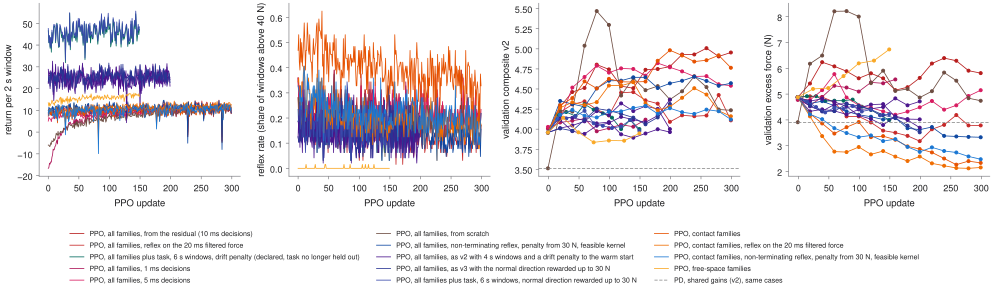

Reports D2 and D3 trained the controllers by first-order methods through simulator or learned-model gradients. The best of them, a PD + residual trained by a short-horizon actor-critic through median-clipped finite differences with a light torque-rate penalty, beats the tuned PD on every family and held-out group except the deep blocked target, where it pushes as hard as the PD; the arms that did yield there tracked worse in free space. Can reinforcement learning in the plant, which needs no gradient through contact and can optimise a long-horizon objective with a hard force limit, get both: the tracking of the warm start and compliance on targets that cannot be reached? What does the warm start contribute, and which training families does a controller need to see?
Erratum 2 (2026-11-16, blocked family). The blocked-reference generator tested 'inside the surface' with the wrong sign for the table surface (60% of the blocked references, ADR 0007): those references had empty blocked and release phases, so their training windows in reports D2 to D4 contained no block at all (they started at the end of the reference), and their recovery metric was undefined and counted as zero in the composite. The generator is fixed, the reference pools were rebuilt and the test tables of this report were regenerated from the corrected cases. For the tuned PD the blocked composite moves from 7.10 to 7.62, for the warm start from 6.94 to 8.51, for the contact-family arm v2 from 6.17 to 7.81 and for seed 2 of v3 from 6.71 to 7.17; the recovery after release is 0.37 to 0.85 s for the learned controllers against 0.33 s for the PD. Finding 3's statement that the contact-family arm beats the PD on blocked targets is withdrawn: it beats its warm start and is level with the PD. Findings 5 and 7 gain a cause: in every D2 to D4 arm, 60% of the blocked training windows contained no block, so the blocked behaviour was under-represented in the data as well as in the reward.
Erratum 3 (2026-11-16, wall surface). In the wall branch of the blocked and contact families the tool pointed 50 to 70 degrees below horizontal with targets up to 8 cm inside the wall, so the hand and the forearm reached the wall before the tool: link contact during 65 to 85% of the blocked phase, and in three of seven wall validation cases the tool never touched the wall. Those cases measured unsensed link collisions. The generators now tilt the tool 30 to 45 degrees, place wall targets 3 to 6 cm deep and reject any reference whose deepest pose brings a link within 2 cm of the wall (ADR 0007); PD rollouts confirm tool contact for 93 to 98% of the blocked phase and no link contact. The tables of this report were regenerated a second time from the corrected wall cases: PD 9.09, warm start 10.23, contact-family arm v2 8.71 and seed 2 of v3 8.21 on the blocked composite. Every D2 to D4 arm was trained with the flawed wall references, which bears on their blocked and contact rows.
Medium. The batch of MuJoCo plant simulators of the deep dive, forward only: protocol v2 training windows of 2 s with per-window robot instances, payloads of 0 to 3 kg and 10 N pulses, 64 windows per update (ADR 0006).
Controller and actor. PD + residual with the network and two-scale 1 kHz proprioceptive history of report D3. The network decides every 10 ms and its residual is held in between while the history is still sampled every millisecond, so the weights of the 1 kHz warm start keep the meaning of their inputs (on the warm start the decision period makes no measurable difference between 1 and 20 ms). The actor is a diagonal Gaussian in the pre-tanh residual space (residual = half the torque limit times tanh of the action), initial standard deviation 0.1, learned; the deterministic policy exported for evaluation is the mean.
Critic. The privileged critic of the actor-critic run (state, touch force, payload, 500 ms reference preview), warm-started from it. Privileged inputs stay in simulation; the actor sees proprioception and the position target only.
Reward and force cap. The step reward of report D3 (bounded tracking kernels with the 20 mrad half-width, light torque-rate penalty, contact-force and force-rate penalties, weak restoring term) summed over the 10 held steps; the contact-force penalty starts at 20 N instead of 30. A force reflex models the real robot's collision reaction: when the normal contact force exceeds 40 N the window ends for that robot with a penalty of 5 reward units (a window of perfect tracking is worth about 26), the residual is switched off and the remaining steps are excluded from the update.
PPO. Generalised advantage estimation (discount 0.995 per physics step, lambda 0.95), clipped objective (0.2), 5 epochs of minibatches of 2048 per update of 12,800 decisions, separate Adam optimisers (actor 1e-4, critic 3e-4), gradient clipping 0.5, normalised advantages, bootstrap at the window end. Validation every 20 updates on the 14 fixed cases of the corrected plant; checkpoints kept at every validation.
Arms. From the warm start on all training families (the stage-2 mixture of D3), from the warm start on the contact families (contact and blocked with a little hold and free), and from scratch on all families (zero residual, standard deviation 0.2, actor learning rate 3e-4).
One line per run. Validation every 20 updates on 14 fixed protocol v2 cases in the corrected plant.

One case per family (median composite of the protocol v2 PD); contact families also at quarter speed.
Curated from the test tables: every (group, family, metric) with a significant paired difference against the protocol v2 PD, for the D3 residual (the warm start), the contact-family PPO arm (v2) and the all-family PPO arm v3 (three seeds pooled). Lower is better for every metric listed.
| Group | Family | Metric | Reference | Significantly better | Significantly worse |
|---|---|---|---|---|---|
| In-distribution families | Hold (10 N pulses) | Position RMSE (rad) | 0.0167 | residual: 0.00613 (-63%); PPO contact: 0.00628 (-62%); PPO v3: 0.00563 (-66%) | — |
| In-distribution families | Hold (10 N pulses) | Peak deflection under 10 N pulse (m) | 0.016 | residual: 0.0118 (-26%); PPO v3: 0.0124 (-22%) | — |
| In-distribution families | Hold (10 N pulses) | Torque rate RMS (Nm/s) | 48.7 | residual: 43.4 (-11%) | PPO contact: 73.4 (+51%); PPO v3: 78.2 (+60%) |
| In-distribution families | Free motion | Position RMSE (rad) | 0.0191 | residual: 0.0134 (-30%); PPO v3: 0.0141 (-26%) | PPO contact: 0.0263 (+38%) |
| In-distribution families | Free motion | Torque rate RMS (Nm/s) | 52.9 | residual: 44.5 (-16%) | PPO contact: 80.3 (+52%); PPO v3: 69.5 (+31%) |
| In-distribution families | Policy-like targets | Position RMSE (rad) | 0.0553 | residual: 0.047 (-15%); PPO v3: 0.0477 (-14%) | — |
| In-distribution families | Policy-like targets | Torque rate RMS (Nm/s) | 1.77e+03 | residual: 1.57e+03 (-11%); PPO contact: 1.71e+03 (-3%); PPO v3: 1.6e+03 (-9%) | — |
| In-distribution families | Step targets | Position RMSE (rad) | 0.0444 | residual: 0.0382 (-14%); PPO contact: 0.041 (-8%); PPO v3: 0.0383 (-14%) | — |
| In-distribution families | Step targets | Settling time after step (s) | 0.663 | residual: 0.391 (-41%); PPO v3: 0.395 (-40%) | — |
| In-distribution families | Step targets | Step overshoot (-) | 0.0176 | PPO contact: 0.00746 (-58%) | — |
| In-distribution families | Contact (press, slide) | Excess contact force above 30 N (mean while in contact) (N) | 8.95 | residual: 5.62 (-37%); PPO contact: 3.54 (-61%); PPO v3: 4.5 (-50%) | — |
| In-distribution families | Contact (press, slide) | Excess contact force above the 15 N cap (mean while in contact) (N) | 16.1 | PPO contact: 8.21 (-49%); PPO v3: 10.2 (-37%) | — |
| In-distribution families | Contact (press, slide) | Peak normal force (N) | 169 | residual: 106 (-37%); PPO contact: 56.2 (-67%); PPO v3: 87.5 (-48%) | — |
| In-distribution families | Contact (press, slide) | Peak of the 20 ms low-pass filtered normal force (sustained force) (N) | 88.8 | residual: 60.4 (-32%); PPO contact: 32.4 (-64%); PPO v3: 49.6 (-44%) | — |
| In-distribution families | Contact (press, slide) | Feasible-direction tool error (m) | 0.0403 | residual: 0.0222 (-45%); PPO v3: 0.0229 (-43%) | — |
| In-distribution families | Contact (press, slide) | Press-phase force deficit below 5 N (N) | 1.39 | residual: 0.333 (-76%) | — |
| In-distribution families | Contact (press, slide) | Contact losses of 5 ms or more during contact phase (-) | 9.5 | — | PPO contact: 34.1 (+259%) |
| In-distribution families | Contact (press, slide) | Contact losses of 5 ms or more per second of press phase (1/s) | 4.33 | — | PPO contact: 13.6 (+215%) |
| In-distribution families | Blocked target | Excess contact force above 30 N (mean while in contact) (N) | 32.7 | PPO contact: 27.8 (-15%) | residual: 43 (+31%); PPO v3: 37.7 (+15%) |
| In-distribution families | Blocked target | Excess contact force above the 15 N cap (mean while in contact) (N) | 45.6 | — | residual: 57.2 (+25%); PPO v3: 51.8 (+14%) |
| In-distribution families | Blocked target | Peak normal force (N) | 134 | PPO contact: 99.8 (-26%) | — |
| In-distribution families | Blocked target | Peak of the 20 ms low-pass filtered normal force (sustained force) (N) | 90.4 | PPO contact: 73.1 (-19%) | — |
| In-distribution families | Blocked target | Feasible-direction tool error (m) | 0.0376 | residual: 0.0228 (-39%); PPO v3: 0.024 (-36%) | — |
| In-distribution families | Blocked target | Apparent stiffness: mean normal force per metre of reference depth while blocked (after the first 0.3 s of contact) (N/m) | 1.18e+03 | — | residual: 1.44e+03 (+22%) |
| In-distribution families | Task (held out) | Excess contact force above 30 N (mean while in contact) (N) | 3.86 | residual: 0.171 (-96%); PPO contact: 0.0352 (-99%); PPO v3: 0.101 (-97%) | — |
| In-distribution families | Task (held out) | Excess contact force above the 15 N cap (mean while in contact) (N) | 10.7 | residual: 2.15 (-80%); PPO contact: 1.24 (-88%); PPO v3: 1.32 (-88%) | — |
| In-distribution families | Task (held out) | Peak normal force (N) | 123 | residual: 36.5 (-70%); PPO contact: 21.6 (-82%); PPO v3: 30.7 (-75%) | — |
| In-distribution families | Task (held out) | Peak of the 20 ms low-pass filtered normal force (sustained force) (N) | 64.7 | residual: 17.5 (-73%); PPO contact: 9.91 (-85%); PPO v3: 13.7 (-79%) | — |
| In-distribution families | Task (held out) | Feasible-direction tool error (m) | 0.0241 | residual: 0.014 (-42%); PPO v3: 0.0148 (-39%) | — |
| In-distribution families | Task (held out) | Press-phase force deficit below 5 N (N) | 0.244 | — | residual: 1.45 (+493%); PPO contact: 2.55 (+943%); PPO v3: 2.01 (+723%) |
| Held-out workspace (base yaw 1.2 to 2.6 rad) | Free motion | Position RMSE (rad) | 0.0263 | residual: 0.0146 (-44%); PPO v3: 0.0149 (-43%) | — |
| Held-out workspace (base yaw 1.2 to 2.6 rad) | Free motion | Torque rate RMS (Nm/s) | 54.7 | residual: 46.1 (-16%) | PPO contact: 74.2 (+36%); PPO v3: 70.2 (+28%) |
| Held-out workspace (base yaw 1.2 to 2.6 rad) | Policy-like targets | Position RMSE (rad) | 0.0572 | residual: 0.0518 (-9%) | — |
| Held-out workspace (base yaw 1.2 to 2.6 rad) | Policy-like targets | Torque rate RMS (Nm/s) | 1.82e+03 | residual: 1.62e+03 (-11%); PPO v3: 1.66e+03 (-9%) | — |
| Speed x1.5 | Free motion | Position RMSE (rad) | 0.0248 | residual: 0.0189 (-24%); PPO v3: 0.0199 (-20%) | PPO contact: 0.0334 (+34%) |
| Speed x1.5 | Free motion | Torque rate RMS (Nm/s) | 63.4 | — | PPO contact: 123 (+94%); PPO v3: 97 (+53%) |
| Speed x1.5 | Policy-like targets | Position RMSE (rad) | 0.0777 | residual: 0.0654 (-16%); PPO v3: 0.0663 (-15%) | — |
| Speed x1.5 | Policy-like targets | Torque rate RMS (Nm/s) | 1.95e+03 | residual: 1.72e+03 (-12%); PPO contact: 1.85e+03 (-5%); PPO v3: 1.74e+03 (-11%) | — |
| Speed x1.5 | Contact (press, slide) | Excess contact force above 30 N (mean while in contact) (N) | 8.14 | residual: 3.14 (-61%); PPO contact: 1.32 (-84%); PPO v3: 2.35 (-71%) | — |
| Speed x1.5 | Contact (press, slide) | Excess contact force above the 15 N cap (mean while in contact) (N) | 14.5 | residual: 10 (-31%); PPO contact: 5.57 (-62%); PPO v3: 7.69 (-47%) | — |
| Speed x1.5 | Contact (press, slide) | Peak normal force (N) | 295 | residual: 156 (-47%); PPO contact: 62.9 (-79%); PPO v3: 120 (-59%) | — |
| Speed x1.5 | Contact (press, slide) | Peak of the 20 ms low-pass filtered normal force (sustained force) (N) | 136 | residual: 78.8 (-42%); PPO contact: 29.8 (-78%); PPO v3: 61.6 (-55%) | — |
| Speed x1.5 | Task (held out) | Excess contact force above 30 N (mean while in contact) (N) | 5.47 | residual: 0.613 (-89%); PPO contact: 0.186 (-97%); PPO v3: 0.427 (-92%) | — |
| Speed x1.5 | Task (held out) | Excess contact force above the 15 N cap (mean while in contact) (N) | 13.1 | residual: 2.45 (-81%); PPO contact: 1.22 (-91%); PPO v3: 2.08 (-84%) | — |
| Speed x1.5 | Task (held out) | Peak normal force (N) | 298 | residual: 61.2 (-79%); PPO contact: 28.3 (-90%); PPO v3: 51 (-83%) | — |
| Speed x1.5 | Task (held out) | Peak of the 20 ms low-pass filtered normal force (sustained force) (N) | 129 | residual: 28 (-78%); PPO contact: 10.2 (-92%); PPO v3: 21.3 (-84%) | — |
| Speed x1.5 | Task (held out) | Feasible-direction tool error (m) | 0.0267 | residual: 0.0156 (-42%) | — |
| Speed x1.5 | Task (held out) | Press-phase force deficit below 5 N (N) | 0 | — | PPO contact: 2.07 (+206537082108%); PPO v3: 1.55 (+154862292947%) |
| Speed x1.5 | Task (held out) | Contact losses of 5 ms or more per second of press phase (1/s) | 14.3 | — | residual: 21.3 (+48%) |
| Speed x2 | Free motion | Position RMSE (rad) | 0.0326 | residual: 0.0264 (-19%); PPO v3: 0.0273 (-16%) | PPO contact: 0.0399 (+22%) |
| Speed x2 | Free motion | Torque rate RMS (Nm/s) | 92.6 | — | PPO contact: 181 (+96%); PPO v3: 151 (+64%) |
| Speed x2 | Policy-like targets | Position RMSE (rad) | 0.0975 | residual: 0.0827 (-15%); PPO v3: 0.0839 (-14%) | — |
| Speed x2 | Policy-like targets | Torque rate RMS (Nm/s) | 1.99e+03 | residual: 1.76e+03 (-12%); PPO contact: 1.89e+03 (-5%); PPO v3: 1.78e+03 (-11%) | — |
| Speed x2 | Contact (press, slide) | Excess contact force above 30 N (mean while in contact) (N) | 9.4 | residual: 3.69 (-61%); PPO contact: 2.27 (-76%); PPO v3: 3.05 (-68%) | — |
| Speed x2 | Contact (press, slide) | Excess contact force above the 15 N cap (mean while in contact) (N) | 16.3 | residual: 10.1 (-38%); PPO contact: 6.8 (-58%); PPO v3: 8.27 (-49%) | — |
| Speed x2 | Contact (press, slide) | Peak normal force (N) | 356 | residual: 156 (-56%); PPO contact: 53.3 (-85%); PPO v3: 131 (-63%) | — |
| Speed x2 | Contact (press, slide) | Peak of the 20 ms low-pass filtered normal force (sustained force) (N) | 161 | residual: 74.3 (-54%); PPO contact: 20.4 (-87%); PPO v3: 60.9 (-62%) | — |
| Speed x2 | Task (held out) | Excess contact force above 30 N (mean while in contact) (N) | 7.35 | residual: 1.08 (-85%); PPO contact: 0.425 (-94%); PPO v3: 0.761 (-90%) | — |
| Speed x2 | Task (held out) | Excess contact force above the 15 N cap (mean while in contact) (N) | 13.8 | residual: 2.62 (-81%); PPO contact: 1.31 (-91%); PPO v3: 1.66 (-88%) | — |
| Speed x2 | Task (held out) | Peak normal force (N) | 360 | residual: 53.9 (-85%); PPO contact: 26 (-93%); PPO v3: 43.6 (-88%) | — |
| Speed x2 | Task (held out) | Peak of the 20 ms low-pass filtered normal force (sustained force) (N) | 138 | residual: 27.3 (-80%); PPO contact: 8.79 (-94%); PPO v3: 20.6 (-85%) | — |
| Speed x2 | Task (held out) | Press-phase force deficit below 5 N (N) | 0.451 | — | residual: 2.49 (+452%); PPO contact: 2.5 (+454%); PPO v3: 2.5 (+454%) |
| Payload 3 kg | Free motion | Position RMSE (rad) | 0.0486 | residual: 0.0239 (-51%); PPO contact: 0.0336 (-31%); PPO v3: 0.0249 (-49%) | — |
| Payload 3 kg | Free motion | Torque rate RMS (Nm/s) | 58 | residual: 47.2 (-19%) | PPO contact: 88.1 (+52%); PPO v3: 74.3 (+28%) |
| Payload 3 kg | Contact (press, slide) | Excess contact force above 30 N (mean while in contact) (N) | 11.6 | residual: 5.97 (-49%) | — |
| Payload 3 kg | Contact (press, slide) | Peak normal force (N) | 292 | residual: 152 (-48%); PPO contact: 71.5 (-76%); PPO v3: 128 (-56%) | — |
| Payload 3 kg | Contact (press, slide) | Peak of the 20 ms low-pass filtered normal force (sustained force) (N) | 136 | residual: 81.2 (-40%); PPO contact: 40 (-71%); PPO v3: 69.4 (-49%) | — |
| Payload 3 kg | Contact (press, slide) | Feasible-direction tool error (m) | 0.0502 | residual: 0.0233 (-54%); PPO v3: 0.0228 (-55%) | — |
| Payload 3 kg | Contact (press, slide) | Contact losses of 5 ms or more during contact phase (-) | 3.75 | — | PPO v3: 8.75 (+133%) |
| Payload 3 kg | Blocked target | Excess contact force above 30 N (mean while in contact) (N) | 46.3 | residual: 35 (-24%); PPO contact: 24.6 (-47%); PPO v3: 31.4 (-32%) | — |
| Payload 3 kg | Blocked target | Feasible-direction tool error (m) | 0.0847 | residual: 0.0254 (-70%); PPO contact: 0.032 (-62%); PPO v3: 0.0252 (-70%) | — |
| Payload 3 kg | Blocked target | Recovery after a blocked reference returns (s) | 1.57 | residual: 0.639 (-59%); PPO v3: 0.7 (-55%) | — |
| Payload 3 kg | Task (held out) | Excess contact force above 30 N (mean while in contact) (N) | 18.2 | residual: 1.01 (-94%); PPO contact: 0.376 (-98%); PPO v3: 0.692 (-96%) | — |
| Payload 3 kg | Task (held out) | Excess contact force above the 15 N cap (mean while in contact) (N) | 29.8 | residual: 11 (-63%); PPO contact: 7.55 (-75%); PPO v3: 7.77 (-74%) | — |
| Payload 3 kg | Task (held out) | Peak normal force (N) | 297 | residual: 68.6 (-77%); PPO contact: 54.7 (-82%); PPO v3: 68.2 (-77%) | — |
| Payload 3 kg | Task (held out) | Peak of the 20 ms low-pass filtered normal force (sustained force) (N) | 140 | residual: 34.9 (-75%); PPO contact: 28.7 (-79%); PPO v3: 34.7 (-75%) | — |
| Payload 3 kg | Task (held out) | Feasible-direction tool error (m) | 0.0636 | residual: 0.0179 (-72%); PPO contact: 0.024 (-62%); PPO v3: 0.0163 (-74%) | — |
| Payload 3 kg | Task (held out) | Contact losses of 5 ms or more per second of press phase (1/s) | 0 | — | residual: 1.48 (+148064949314%); PPO v3: 3.49 (+349090183411%) |
| Held-out robot instances (doubled deviations) | Free motion | Position RMSE (rad) | 0.0184 | — | PPO contact: 0.027 (+47%) |
| Held-out robot instances (doubled deviations) | Free motion | Torque rate RMS (Nm/s) | 51.5 | residual: 43.7 (-15%) | PPO contact: 81.6 (+58%); PPO v3: 68.8 (+34%) |
| Held-out robot instances (doubled deviations) | Policy-like targets | Position RMSE (rad) | 0.0612 | residual: 0.0519 (-15%); PPO v3: 0.0526 (-14%) | — |
| Held-out robot instances (doubled deviations) | Policy-like targets | Torque rate RMS (Nm/s) | 1.89e+03 | residual: 1.66e+03 (-12%); PPO contact: 1.8e+03 (-5%); PPO v3: 1.69e+03 (-10%) | — |
| Held-out robot instances (doubled deviations) | Contact (press, slide) | Excess contact force above the 15 N cap (mean while in contact) (N) | 15.6 | PPO contact: 8.74 (-44%) | — |
| Held-out robot instances (doubled deviations) | Contact (press, slide) | Peak normal force (N) | 217 | residual: 112 (-48%); PPO contact: 58.2 (-73%); PPO v3: 86.5 (-60%) | — |
| Held-out robot instances (doubled deviations) | Contact (press, slide) | Peak of the 20 ms low-pass filtered normal force (sustained force) (N) | 113 | residual: 63.8 (-43%); PPO contact: 33.2 (-71%); PPO v3: 49.2 (-56%) | — |
| Held-out robot instances (doubled deviations) | Blocked target | Peak normal force (N) | 112 | PPO contact: 82.2 (-27%) | — |
| Held-out robot instances (doubled deviations) | Blocked target | Feasible-direction tool error (m) | 0.0431 | residual: 0.023 (-47%) | — |
| Held-out robot instances (doubled deviations) | Blocked target | Recovery after a blocked reference returns (s) | 0.823 | PPO v3: 0.232 (-72%) | — |
Protocol v2 on the corrected plant. The reference PD is the shared gain set of D1 and the warm start is the 20 mrad-kernel residual of D3. Every PPO arm is reported from its final checkpoint (300 updates of 64 windows of 2 s, or 200 of 48 windows of 4 s, or 150 of 32 windows of 6 s; the 1 ms-decision arm from its checkpoint at update 159) so that the effect of the fine-tuning is visible; the free-space arm is also the only arm whose validation-selected checkpoint is not the warm start itself and is reported from it. Three seeds of the v3 arm.
| Group | Controller | Composite v2 | Composite (15 N cap) | Excess force above 30 N (N) | Excess force above 15 N (N) | Peak force (N) | Sustained peak, 20 ms (N) | Position RMSE (rad) | Diverged |
|---|---|---|---|---|---|---|---|---|---|
| In-distribution families | PD, shared gains (v2) | 4.29 | 5.95 | 6.53 | 10.4 | 142 | 81.3 | 0.0314 | 0 |
| In-distribution families | PD + residual, actor-critic (warm start) | 3.33 | 4.96 | 7.05 | 10.4 | 89.7 | 56.9 | 0.0231 | 0 |
| In-distribution families | PPO, all families, from the residual (10 ms decisions) | 3.62 | 5.17 | 6.66 | 9.76 | 62.2 | 43.7 | 0.0258 | 0 |
| In-distribution families | PPO, all families, reflex on the 20 ms filtered force | 3.12 | 4.56 | 5.87 | 9 | 69.3 | 45 | 0.0238 | 0 |
| In-distribution families | PPO, all families plus task, 6 s windows, drift penalty (declared, task no longer held out) | 3.11 | 4.59 | 6.23 | 9.33 | 81.8 | 52 | 0.0238 | 0 |
| In-distribution families | PPO, all families, 1 ms decisions | 3.05 | 4.67 | 6.75 | 10 | 86.7 | 55.4 | 0.0234 | 0 |
| In-distribution families | PPO, all families, 5 ms decisions | 3.5 | 5.16 | 7.26 | 10.4 | 62.5 | 45.3 | 0.0259 | 0 |
| In-distribution families | PPO, all families, from scratch | 3.28 | 4.74 | 6.24 | 9.26 | 67 | 45.5 | 0.0248 | 0 |
| In-distribution families | PPO, all families, non-terminating reflex, penalty from 30 N, feasible kernel | 3.37 | 4.75 | 5.42 | 8.44 | 67.4 | 44.2 | 0.0255 | 0 |
| In-distribution families | PPO, all families, as v2 with 4 s windows and a drift penalty to the warm start | 3.13 | 4.59 | 6.11 | 9.16 | 79.9 | 50.4 | 0.0235 | 0 |
| In-distribution families | PPO, all families, as v3 with the normal direction rewarded up to 30 N | 3.21 | 4.61 | 5.74 | 8.75 | 84.4 | 52.8 | 0.0236 | 0 |
| In-distribution families | PPO, all families plus task, 6 s windows, normal direction rewarded up to 30 N | 3.07 | 4.6 | 6.32 | 9.41 | 85.4 | 54.4 | 0.0235 | 0 |
| In-distribution families | PPO, contact families | 4.19 | 5.39 | 3.65 | 6.69 | 45.8 | 36.4 | 0.035 | 0 |
| In-distribution families | PPO, contact families, reflex on the 20 ms filtered force | 3.7 | 4.89 | 4.38 | 7.21 | 57.3 | 37 | 0.0282 | 0 |
| In-distribution families | PPO, contact families, non-terminating reflex, penalty from 30 N, feasible kernel | 3.55 | 4.76 | 4.48 | 7.26 | 59.2 | 38.5 | 0.0283 | 0 |
| In-distribution families | PPO, free-space families | 3.09 | 5.01 | 8.62 | 12.4 | 111 | 70.1 | 0.0223 | 0 |
| Held-out workspace (base yaw 1.2 to 2.6 rad) | PD, shared gains (v2) | 1.62 | 1.62 | 0 | 0 | — | — | 0.0417 | 0 |
| Held-out workspace (base yaw 1.2 to 2.6 rad) | PD + residual, actor-critic (warm start) | 1.23 | 1.23 | 0 | 0 | — | — | 0.0332 | 0 |
| Held-out workspace (base yaw 1.2 to 2.6 rad) | PPO, all families, from the residual (10 ms decisions) | 1.4 | 1.4 | 0 | 0 | — | — | 0.0375 | 0 |
| Held-out workspace (base yaw 1.2 to 2.6 rad) | PPO, all families, reflex on the 20 ms filtered force | 1.29 | 1.29 | 0 | 0 | — | — | 0.0339 | 0 |
| Held-out workspace (base yaw 1.2 to 2.6 rad) | PPO, all families plus task, 6 s windows, drift penalty (declared, task no longer held out) | 1.29 | 1.29 | 0 | 0 | — | — | 0.0344 | 0 |
| Held-out workspace (base yaw 1.2 to 2.6 rad) | PPO, all families, 1 ms decisions | 1.28 | 1.28 | 0 | 0 | — | — | 0.0336 | 0 |
| Held-out workspace (base yaw 1.2 to 2.6 rad) | PPO, all families, 5 ms decisions | 1.41 | 1.41 | 0 | 0 | — | — | 0.037 | 0 |
| Held-out workspace (base yaw 1.2 to 2.6 rad) | PPO, all families, from scratch | 1.46 | 1.46 | 0 | 0 | — | — | 0.0374 | 0 |
| Held-out workspace (base yaw 1.2 to 2.6 rad) | PPO, all families, non-terminating reflex, penalty from 30 N, feasible kernel | 1.35 | 1.35 | 0 | 0 | — | — | 0.0359 | 0 |
| Held-out workspace (base yaw 1.2 to 2.6 rad) | PPO, all families, as v2 with 4 s windows and a drift penalty to the warm start | 1.27 | 1.27 | 0 | 0 | — | — | 0.0338 | 0 |
| Held-out workspace (base yaw 1.2 to 2.6 rad) | PPO, all families, as v3 with the normal direction rewarded up to 30 N | 1.24 | 1.24 | 0 | 0 | — | — | 0.0331 | 0 |
| Held-out workspace (base yaw 1.2 to 2.6 rad) | PPO, all families plus task, 6 s windows, normal direction rewarded up to 30 N | 1.28 | 1.28 | 0 | 0 | — | — | 0.0339 | 0 |
| Held-out workspace (base yaw 1.2 to 2.6 rad) | PPO, contact families | 2.17 | 2.17 | 0 | 0 | — | — | 0.0572 | 0 |
| Held-out workspace (base yaw 1.2 to 2.6 rad) | PPO, contact families, reflex on the 20 ms filtered force | 1.62 | 1.62 | 0 | 0 | — | — | 0.0432 | 0 |
| Held-out workspace (base yaw 1.2 to 2.6 rad) | PPO, contact families, non-terminating reflex, penalty from 30 N, feasible kernel | 1.68 | 1.68 | 0 | 0 | — | — | 0.0443 | 0 |
| Held-out workspace (base yaw 1.2 to 2.6 rad) | PPO, free-space families | 1.18 | 1.18 | 0 | 0 | — | — | 0.0308 | 0 |
| Speed x1.5 | PD, shared gains (v2) | 4.33 | 5.41 | 3.4 | 6.91 | 296 | 132 | 0.0356 | 0 |
| Speed x1.5 | PD + residual, actor-critic (warm start) | 2.48 | 3.28 | 0.939 | 3.12 | 108 | 53.4 | 0.0273 | 0 |
| Speed x1.5 | PPO, all families, from the residual (10 ms decisions) | 2.83 | 3.25 | 0.62 | 2.02 | 45.8 | 17.6 | 0.0311 | 0 |
| Speed x1.5 | PPO, all families, reflex on the 20 ms filtered force | 2.54 | 3.12 | 0.586 | 2.4 | 58.8 | 26.3 | 0.0291 | 0 |
| Speed x1.5 | PPO, all families plus task, 6 s windows, drift penalty (declared, task no longer held out) | 2.57 | 3.27 | 0.828 | 2.75 | 99 | 46.5 | 0.0282 | 0 |
| Speed x1.5 | PPO, all families, 1 ms decisions | 2.47 | 3.22 | 1.08 | 3.09 | 92 | 45 | 0.0274 | 0 |
| Speed x1.5 | PPO, all families, 5 ms decisions | 2.67 | 3.16 | 0.555 | 2.16 | 42.9 | 15.9 | 0.031 | 0 |
| Speed x1.5 | PPO, all families, from scratch | 2.77 | 3.15 | 0.552 | 1.68 | 50.8 | 19.8 | 0.0305 | 0 |
| Speed x1.5 | PPO, all families, non-terminating reflex, penalty from 30 N, feasible kernel | 2.68 | 3.19 | 0.693 | 2.25 | 56.4 | 24.7 | 0.0305 | 0 |
| Speed x1.5 | PPO, all families, as v2 with 4 s windows and a drift penalty to the warm start | 2.51 | 3.16 | 0.694 | 2.44 | 85.7 | 41.4 | 0.0279 | 0 |
| Speed x1.5 | PPO, all families, as v3 with the normal direction rewarded up to 30 N | 2.58 | 3.19 | 0.749 | 2.17 | 92.8 | 46.4 | 0.0275 | 0 |
| Speed x1.5 | PPO, all families plus task, 6 s windows, normal direction rewarded up to 30 N | 2.57 | 3.31 | 0.955 | 2.87 | 105 | 51.2 | 0.028 | 0 |
| Speed x1.5 | PPO, contact families | 3.99 | 4.5 | 0.371 | 2.49 | 37.2 | 21.9 | 0.0492 | 0 |
| Speed x1.5 | PPO, contact families, reflex on the 20 ms filtered force | 3.16 | 3.48 | 0.311 | 1.49 | 47.1 | 17.6 | 0.0373 | 0 |
| Speed x1.5 | PPO, contact families, non-terminating reflex, penalty from 30 N, feasible kernel | 2.98 | 3.44 | 0.377 | 1.7 | 45.6 | 20 | 0.0367 | 0 |
| Speed x1.5 | PPO, free-space families | 2.64 | 3.61 | 1.85 | 4.78 | 172 | 80.8 | 0.0252 | 0 |
| Speed x2 | PD, shared gains (v2) | 4.77 | 5.81 | 4.19 | 7.54 | 358 | 150 | 0.0416 | 0 |
| Speed x2 | PD + residual, actor-critic (warm start) | 2.88 | 3.56 | 1.19 | 3.18 | 105 | 50.8 | 0.0338 | 0 |
| Speed x2 | PPO, all families, from the residual (10 ms decisions) | 3.27 | 3.85 | 1.26 | 3.23 | 47.6 | 14.5 | 0.0371 | 0 |
| Speed x2 | PPO, all families, reflex on the 20 ms filtered force | 2.95 | 3.52 | 0.856 | 2.73 | 57.4 | 22.2 | 0.0357 | 0 |
| Speed x2 | PPO, all families plus task, 6 s windows, drift penalty (declared, task no longer held out) | 2.94 | 3.42 | 0.952 | 2.36 | 93.4 | 42.4 | 0.0349 | 0 |
| Speed x2 | PPO, all families, 1 ms decisions | 2.85 | 3.47 | 1.26 | 2.99 | 89.1 | 41.7 | 0.034 | 0 |
| Speed x2 | PPO, all families, 5 ms decisions | 3.1 | 3.51 | 0.826 | 2.28 | 48.8 | 15.9 | 0.0374 | 0 |
| Speed x2 | PPO, all families, from scratch | 3.17 | 3.86 | 1.39 | 3.83 | 56.9 | 24.6 | 0.0368 | 0 |
| Speed x2 | PPO, all families, non-terminating reflex, penalty from 30 N, feasible kernel | 3.02 | 3.44 | 0.763 | 2.14 | 58.6 | 20.3 | 0.0373 | 0 |
| Speed x2 | PPO, all families, as v2 with 4 s windows and a drift penalty to the warm start | 2.92 | 3.47 | 0.954 | 2.48 | 87.2 | 40.8 | 0.0346 | 0 |
| Speed x2 | PPO, all families, as v3 with the normal direction rewarded up to 30 N | 3 | 3.54 | 1.03 | 2.43 | 103 | 48.5 | 0.0342 | 0 |
| Speed x2 | PPO, all families plus task, 6 s windows, normal direction rewarded up to 30 N | 2.96 | 3.49 | 1.11 | 2.57 | 106 | 49.2 | 0.0346 | 0 |
| Speed x2 | PPO, contact families | 4.37 | 5.06 | 1.03 | 3.61 | 34.1 | 18.9 | 0.0555 | 0 |
| Speed x2 | PPO, contact families, reflex on the 20 ms filtered force | 3.6 | 4.27 | 1.07 | 3.54 | 57.7 | 23.5 | 0.0439 | 0 |
| Speed x2 | PPO, contact families, non-terminating reflex, penalty from 30 N, feasible kernel | 3.37 | 3.84 | 0.675 | 2.03 | 39.6 | 14.6 | 0.0433 | 0 |
| Speed x2 | PPO, free-space families | 3.11 | 3.93 | 2.19 | 4.77 | 187 | 83.4 | 0.0311 | 0 |
| Payload 3 kg | PD, shared gains (v2) | 9.9 | 13.6 | 19 | 27.3 | 235 | 120 | 0.0565 | 0 |
| Payload 3 kg | PD + residual, actor-critic (warm start) | 4.57 | 7.58 | 10.5 | 19.3 | 118 | 66.2 | 0.0208 | 0 |
| Payload 3 kg | PPO, all families, from the residual (10 ms decisions) | 4.27 | 6.97 | 10.4 | 17 | 79 | 47.1 | 0.0202 | 0 |
| Payload 3 kg | PPO, all families, reflex on the 20 ms filtered force | 4.49 | 7.23 | 9.75 | 17.6 | 94.7 | 52.9 | 0.0209 | 0 |
| Payload 3 kg | PPO, all families plus task, 6 s windows, drift penalty (declared, task no longer held out) | 4.47 | 7.16 | 9.57 | 17 | 111 | 63.4 | 0.0208 | 0 |
| Payload 3 kg | PPO, all families, 1 ms decisions | 4.39 | 7.42 | 10.9 | 19.3 | 113 | 64.7 | 0.0203 | 0 |
| Payload 3 kg | PPO, all families, 5 ms decisions | 4.01 | 7.03 | 11.8 | 19.1 | 81.2 | 50.8 | 0.0211 | 0 |
| Payload 3 kg | PPO, all families, from scratch | 4.9 | 7.91 | 11.4 | 19.2 | 98.7 | 58.7 | 0.0227 | 0 |
| Payload 3 kg | PPO, all families, non-terminating reflex, penalty from 30 N, feasible kernel | 3.92 | 6.32 | 8.2 | 14.6 | 87.6 | 47.7 | 0.0214 | 0 |
| Payload 3 kg | PPO, all families, as v2 with 4 s windows and a drift penalty to the warm start | 4.41 | 7.14 | 9.42 | 17.2 | 109 | 61.5 | 0.0211 | 0 |
| Payload 3 kg | PPO, all families, as v3 with the normal direction rewarded up to 30 N | 4.24 | 6.75 | 8.7 | 15.6 | 114 | 63.7 | 0.0205 | 0 |
| Payload 3 kg | PPO, all families plus task, 6 s windows, normal direction rewarded up to 30 N | 4.49 | 7.24 | 9.69 | 17.4 | 115 | 66 | 0.0209 | 0 |
| Payload 3 kg | PPO, contact families | 5.71 | 8.21 | 7.81 | 14.8 | 64.1 | 44.9 | 0.032 | 0 |
| Payload 3 kg | PPO, contact families, reflex on the 20 ms filtered force | 4.94 | 7.33 | 7.14 | 14.7 | 79.3 | 44.4 | 0.0258 | 0 |
| Payload 3 kg | PPO, contact families, non-terminating reflex, penalty from 30 N, feasible kernel | 4.92 | 7.27 | 7.21 | 14.6 | 81 | 46.3 | 0.0261 | 0 |
| Payload 3 kg | PPO, free-space families | 4.57 | 8.08 | 13.4 | 22.8 | 134 | 77.5 | 0.0194 | 0 |
| Held-out robot instances (doubled deviations) | PD, shared gains (v2) | 4.48 | 6.34 | 6.78 | 11.7 | 165 | 93.1 | 0.0348 | 0 |
| Held-out robot instances (doubled deviations) | PD + residual, actor-critic (warm start) | 3.86 | 6.05 | 8.8 | 14.1 | 108 | 68.6 | 0.0268 | 0 |
| Held-out robot instances (doubled deviations) | PPO, all families, from the residual (10 ms decisions) | 4.08 | 6.25 | 9.37 | 14.2 | 77.2 | 54.6 | 0.03 | 0 |
| Held-out robot instances (doubled deviations) | PPO, all families, reflex on the 20 ms filtered force | 3.33 | 5.4 | 8.18 | 13.2 | 81.8 | 54.6 | 0.028 | 0 |
| Held-out robot instances (doubled deviations) | PPO, all families plus task, 6 s windows, drift penalty (declared, task no longer held out) | 3.53 | 5.58 | 8.57 | 13.5 | 102 | 64.3 | 0.0281 | 0 |
| Held-out robot instances (doubled deviations) | PPO, all families, 1 ms decisions | 3.48 | 5.59 | 8.52 | 13.6 | 98.3 | 63.8 | 0.0268 | 0 |
| Held-out robot instances (doubled deviations) | PPO, all families, 5 ms decisions | 4.11 | 6.48 | 10.8 | 15.9 | 76.9 | 58.4 | 0.0302 | 0 |
| Held-out robot instances (doubled deviations) | PPO, all families, from scratch | 3.26 | 4.97 | 6.64 | 11.2 | 67.6 | 44.9 | 0.0293 | 0 |
| Held-out robot instances (doubled deviations) | PPO, all families, non-terminating reflex, penalty from 30 N, feasible kernel | 3.8 | 5.64 | 7.31 | 12.1 | 82.8 | 53.2 | 0.0299 | 0 |
| Held-out robot instances (doubled deviations) | PPO, all families, as v2 with 4 s windows and a drift penalty to the warm start | 3.37 | 5.32 | 7.88 | 12.7 | 93.7 | 59.9 | 0.0275 | 0 |
| Held-out robot instances (doubled deviations) | PPO, all families, as v3 with the normal direction rewarded up to 30 N | 3.61 | 5.43 | 7.33 | 11.9 | 97.9 | 62.1 | 0.0273 | 0 |
| Held-out robot instances (doubled deviations) | PPO, all families plus task, 6 s windows, normal direction rewarded up to 30 N | 3.4 | 5.5 | 8.79 | 13.7 | 107 | 67.6 | 0.0279 | 0 |
| Held-out robot instances (doubled deviations) | PPO, contact families | 4.67 | 6.43 | 5.91 | 10.4 | 58.3 | 46.1 | 0.0452 | 0 |
| Held-out robot instances (doubled deviations) | PPO, contact families, reflex on the 20 ms filtered force | 4.01 | 5.72 | 6.39 | 10.9 | 68.8 | 46.9 | 0.035 | 0 |
| Held-out robot instances (doubled deviations) | PPO, contact families, non-terminating reflex, penalty from 30 N, feasible kernel | 3.89 | 5.51 | 5.7 | 10.1 | 70.2 | 46.2 | 0.0344 | 0 |
| Held-out robot instances (doubled deviations) | PPO, free-space families | 3.59 | 6.22 | 11.5 | 17.3 | 139 | 87.6 | 0.026 | 0 |
| Regime | Metric | PD, shared gains (v2) | PD + residual, actor-critic (warm start) | PPO, all families, from the residual (10 ms decisions) | PPO, all families, reflex on the 20 ms filtered force | PPO, all families plus task, 6 s windows, drift penalty (declared, task no longer held out) | PPO, all families, 1 ms decisions | PPO, all families, 5 ms decisions | PPO, all families, from scratch | PPO, all families, non-terminating reflex, penalty from 30 N, feasible kernel | PPO, all families, as v2 with 4 s windows and a drift penalty to the warm start | PPO, all families, as v3 with the normal direction rewarded up to 30 N | PPO, all families plus task, 6 s windows, normal direction rewarded up to 30 N | PPO, contact families | PPO, contact families, reflex on the 20 ms filtered force | PPO, contact families, non-terminating reflex, penalty from 30 N, feasible kernel | PPO, free-space families |
|---|---|---|---|---|---|---|---|---|---|---|---|---|---|---|---|---|---|
| Hold | Position RMSE (rad) | 0.0167 | 0.00613 (-0.011*) | 0.0073 (-0.0094*) | 0.00505 (-0.012*) | 0.00579 (-0.011*) | 0.00508 (-0.012*) | 0.00585 (-0.011*) | 0.00559 (-0.011*) | 0.00671 (-0.01*) | 0.00563 (-0.011*) | 0.00622 (-0.01*) | 0.00524 (-0.011*) | 0.00708 (-0.0096*) | 0.00567 (-0.011*) | 0.00628 (-0.01*) | 0.00376 (-0.013*) |
| Hold | Peak deflection under 10 N pulse (m) | 0.016 | 0.0118 (-0.0042*) | 0.0108 (-0.0052*) | 0.0121 (-0.0039*) | 0.0128 (-0.0032*) | 0.00985 (-0.0061*) | 0.0105 (-0.0055*) | 0.0084 (-0.0076*) | 0.0122 (-0.0038*) | 0.0124 (-0.0036*) | 0.0123 (-0.0037*) | 0.0128 (-0.0032*) | 0.00971 (-0.0063*) | 0.0164 (0.0004) | 0.0132 (-0.0028) | 0.00923 (-0.0068*) |
| Hold | Torque rate RMS (Nm/s) | 48.7 | 43.4 (-5.3*) | 91.2 (42*) | 88.1 (39*) | 78.2 (29*) | 46.2 (-2.5*) | 80.4 (32*) | 106 (58*) | 82.3 (34*) | 78.2 (29*) | 80.6 (32*) | 77.4 (29*) | 84.8 (36*) | 80 (31*) | 73.4 (25*) | 91.1 (42*) |
| Free joint-space motion | Position RMSE (rad) | 0.0191 | 0.0134 (-0.0057*) | 0.0191 (8.8e-06) | 0.015 (-0.0041*) | 0.0143 (-0.0048*) | 0.0149 (-0.0042*) | 0.0187 (-0.00036) | 0.0195 (0.00039) | 0.0164 (-0.0027) | 0.0141 (-0.005*) | 0.0135 (-0.0056*) | 0.0139 (-0.0052*) | 0.0449 (0.026*) | 0.0259 (0.0068*) | 0.0263 (0.0072*) | 0.0112 (-0.0079*) |
| Free joint-space motion | Torque rate RMS (Nm/s) | 52.9 | 44.5 (-8.4*) | 80.1 (27*) | 80.5 (28*) | 69.6 (17*) | 47 (-5.9*) | 73.3 (20*) | 86.8 (34*) | 73.4 (21*) | 69.5 (17*) | 69 (16*) | 68.9 (16*) | 107 (55*) | 85.7 (33*) | 80.3 (27*) | 77.8 (25*) |
| Policy-like targets | Position RMSE (rad) | 0.0553 | 0.047 (-0.0084*) | 0.0498 (-0.0055*) | 0.0474 (-0.0079*) | 0.0482 (-0.0071*) | 0.0468 (-0.0086*) | 0.0491 (-0.0062*) | 0.0491 (-0.0063*) | 0.0502 (-0.0051*) | 0.0477 (-0.0076*) | 0.0475 (-0.0078*) | 0.048 (-0.0073*) | 0.0677 (0.012*) | 0.0568 (0.0015) | 0.057 (0.0017) | 0.0447 (-0.011*) |
| Policy-like targets | Torque rate RMS (Nm/s) | 1.77e+03 | 1.57e+03 (-2e+02*) | 1.61e+03 (-1.6e+02*) | 1.6e+03 (-1.6e+02*) | 1.63e+03 (-1.3e+02*) | 1.66e+03 (-1.1e+02*) | 1.7e+03 (-63*) | 1.8e+03 (37*) | 1.62e+03 (-1.5e+02*) | 1.6e+03 (-1.6e+02*) | 1.61e+03 (-1.5e+02*) | 1.63e+03 (-1.4e+02*) | 1.72e+03 (-44*) | 1.65e+03 (-1.1e+02*) | 1.71e+03 (-53*) | 1.64e+03 (-1.3e+02*) |
| Step targets | Position RMSE (rad) | 0.0444 | 0.0382 (-0.0062*) | 0.0391 (-0.0053*) | 0.0378 (-0.0066*) | 0.0383 (-0.0061*) | 0.0379 (-0.0065*) | 0.0385 (-0.0059*) | 0.0384 (-0.006*) | 0.0391 (-0.0053*) | 0.0383 (-0.0061*) | 0.0384 (-0.006*) | 0.0382 (-0.0062*) | 0.0439 (-0.00049) | 0.0409 (-0.0035*) | 0.041 (-0.0034*) | 0.0368 (-0.0076*) |
| Step targets | Settling time after step (s) | 0.663 | 0.391 (-0.27*) | 0.453 (-0.21*) | 0.354 (-0.31*) | 0.407 (-0.26*) | 0.389 (-0.27*) | 0.438 (-0.23*) | 0.428 (-0.23*) | 0.444 (-0.22*) | 0.395 (-0.27*) | 0.394 (-0.27*) | 0.399 (-0.26*) | 0.681 (0.018) | 0.518 (-0.15*) | 0.565 (-0.098) | 0.265 (-0.4*) |
| Step targets | Step overshoot (-) | 0.0176 | 0.0139 (-0.0037) | 0.00978 (-0.0079*) | 0.00994 (-0.0077*) | 0.0142 (-0.0034) | 0.0125 (-0.0052) | 0.00864 (-0.009*) | 0.0106 (-0.007*) | 0.0132 (-0.0044) | 0.014 (-0.0037) | 0.0146 (-0.003) | 0.0141 (-0.0035) | 0.00262 (-0.015*) | 0.00752 (-0.01*) | 0.00746 (-0.01*) | 0.0107 (-0.0069*) |
| Contact (tilt, depth, slide) | Excess contact force above 30 N (mean while in contact) (N) | 8.95 | 5.62 (-3.3*) | 5.53 (-3.4) | 3.5 (-5.5*) | 5.38 (-3.6) | 5.06 (-3.9) | 5.34 (-3.6) | 4.18 (-4.8*) | 4.08 (-4.9*) | 4.5 (-4.5*) | 4.01 (-4.9*) | 5.84 (-3.1) | 3.63 (-5.3*) | 3.16 (-5.8*) | 3.54 (-5.4*) | 8.54 (-0.41) |
| Contact (tilt, depth, slide) | Excess contact force above the 15 N cap (mean while in contact) (N) | 16.1 | 12.5 (-3.6) | 11.8 (-4.4) | 9.74 (-6.4*) | 11.5 (-4.7*) | 12.2 (-3.9) | 12.3 (-3.9) | 9.06 (-7.1*) | 10.6 (-5.6) | 10.2 (-5.9*) | 9.45 (-6.7*) | 12.3 (-3.8) | 8.43 (-7.7*) | 7.68 (-8.5*) | 8.21 (-7.9*) | 17.6 (1.5) |
| Contact (tilt, depth, slide) | Peak normal force (N) | 169 | 106 (-63*) | 57.5 (-1.1e+02*) | 66.4 (-1e+02*) | 97.1 (-72*) | 99.2 (-70*) | 53.9 (-1.2e+02*) | 55.1 (-1.1e+02*) | 72.6 (-97*) | 87.5 (-82*) | 100 (-69*) | 104 (-65*) | 42.3 (-1.3e+02*) | 50.7 (-1.2e+02*) | 56.2 (-1.1e+02*) | 151 (-19) |
| Contact (tilt, depth, slide) | Peak of the 20 ms low-pass filtered normal force (sustained force) (N) | 88.8 | 60.4 (-28*) | 35.7 (-53*) | 37.3 (-51*) | 56.4 (-32*) | 57.2 (-32) | 31.7 (-57*) | 31.5 (-57*) | 42.1 (-47*) | 49.6 (-39*) | 57.5 (-31*) | 60.9 (-28) | 28.6 (-60*) | 27.6 (-61*) | 32.4 (-56*) | 85.6 (-3.2) |
| Contact (tilt, depth, slide) | Feasible-direction tool error (m) | 0.0403 | 0.0222 (-0.018*) | 0.0265 (-0.014) | 0.0234 (-0.017*) | 0.0224 (-0.018*) | 0.021 (-0.019*) | 0.0238 (-0.017*) | 0.0258 (-0.014*) | 0.0247 (-0.016) | 0.0229 (-0.017*) | 0.0223 (-0.018*) | 0.0225 (-0.018*) | 0.0329 (-0.0074) | 0.0292 (-0.011) | 0.0259 (-0.014) | 0.021 (-0.019*) |
| Contact (tilt, depth, slide) | Press-phase force deficit below 5 N (N) | 1.39 | 0.333 (-1.1*) | 1.23 (-0.16) | 0.598 (-0.79) | 0.626 (-0.77) | 0.312 (-1.1*) | 0.952 (-0.44) | 1.09 (-0.3) | 0.946 (-0.44) | 0.683 (-0.71) | 0.787 (-0.6) | 0.502 (-0.89) | 0.921 (-0.47) | 0.904 (-0.49) | 1.03 (-0.36) | 0.254 (-1.1*) |
| Contact (tilt, depth, slide) | Contact losses of 5 ms or more during contact phase (-) | 9.5 | 18.4 (8.9) | 23.1 (14) | 18.1 (8.6) | 21.2 (12) | 17.7 (8.2) | 23.9 (14) | 26 (16) | 29.7 (20) | 27.3 (18) | 32.8 (23*) | 17.4 (7.9) | 14.2 (4.8) | 27.5 (18) | 34.1 (25*) | 6.75 (-2.8) |
| Contact (tilt, depth, slide) | Contact losses of 5 ms or more per second of press phase (1/s) | 4.33 | 8.58 (4.2) | 9.16 (4.8) | 6.85 (2.5) | 8.94 (4.6) | 7.98 (3.6) | 8.69 (4.4) | 10.2 (5.8) | 10.2 (5.9) | 11 (6.7) | 12.1 (7.8) | 7.81 (3.5) | 6.78 (2.5) | 10.3 (6) | 13.6 (9.3*) | 3.38 (-0.95) |
| Blocked reference | Excess contact force above 30 N (mean while in contact) (N) | 32.7 | 43 (10*) | 41 (8.3*) | 37.5 (4.7) | 37.3 (4.5) | 42 (9.2*) | 45.4 (13*) | 38.9 (6.2*) | 33.9 (1.1) | 37.7 (5*) | 35.2 (2.5) | 38.3 (5.6*) | 21.6 (-11*) | 27.4 (-5.3) | 27.8 (-4.9*) | 51.5 (19*) |
| Blocked reference | Excess contact force above the 15 N cap (mean while in contact) (N) | 45.6 | 57.2 (12*) | 55.1 (9.5*) | 51.7 (6.1*) | 51.3 (5.7) | 56.2 (11*) | 59.7 (14*) | 52.5 (6.9*) | 48 (2.4) | 51.8 (6.2*) | 49.3 (3.7) | 52.4 (6.8*) | 34.3 (-11*) | 41.3 (-4.3) | 41.4 (-4.2) | 66 (20*) |
| Blocked reference | Peak normal force (N) | 134 | 127 (-7.3) | 111 (-23*) | 117 (-17*) | 120 (-14) | 128 (-6.3) | 114 (-20*) | 114 (-20*) | 112 (-22*) | 121 (-13) | 124 (-10) | 121 (-13) | 72.9 (-61*) | 99.9 (-34*) | 99.8 (-34*) | 141 (6.7) |
| Blocked reference | Peak of the 20 ms low-pass filtered normal force (sustained force) (N) | 90.4 | 92.8 (2.4) | 87.4 (-3) | 85.6 (-4.8) | 87.5 (-2.9) | 93.8 (3.4) | 95.4 (5) | 84.6 (-5.8) | 83.6 (-6.8) | 87.9 (-2.5) | 88.1 (-2.3) | 88.4 (-2) | 63.5 (-27*) | 72.4 (-18*) | 73.1 (-17*) | 105 (15*) |
| Blocked reference | Feasible-direction tool error (m) | 0.0376 | 0.0228 (-0.015*) | 0.0326 (-0.005) | 0.0275 (-0.01) | 0.0235 (-0.014*) | 0.0237 (-0.014*) | 0.0303 (-0.0074) | 0.0344 (-0.0032) | 0.0289 (-0.0088) | 0.024 (-0.014*) | 0.0233 (-0.014*) | 0.0228 (-0.015*) | 0.0531 (0.015) | 0.0347 (-0.0029) | 0.0313 (-0.0064) | 0.0208 (-0.017*) |
| Blocked reference | Recovery after a blocked reference returns (s) | 0.367 | 0.668 (0.3) | 0.6 (0.23) | 0.346 (-0.022) | 0.281 (-0.086) | 0.226 (-0.14) | 0.558 (0.19) | 0.158 (-0.21) | 0.613 (0.25) | 0.31 (-0.057) | 0.476 (0.11) | 0.231 (-0.14) | 1.06 (0.69*) | 0.875 (0.51*) | 0.699 (0.33) | 0.162 (-0.21) |
| Blocked reference | Apparent stiffness: mean normal force per metre of reference depth while blocked (after the first 0.3 s of contact) (N/m) | 1.18e+03 | 1.44e+03 (2.6e+02*) | 1.4e+03 (2.2e+02*) | 1.32e+03 (1.4e+02) | 1.33e+03 (1.5e+02) | 1.4e+03 (2.2e+02*) | 1.47e+03 (2.9e+02*) | 1.26e+03 (80) | 1.23e+03 (55) | 1.32e+03 (1.4e+02) | 1.24e+03 (62) | 1.35e+03 (1.7e+02) | 938 (-2.4e+02) | 1.08e+03 (-97) | 1.09e+03 (-87) | 1.59e+03 (4.1e+02*) |
| Task sequence | Excess contact force above 30 N (mean while in contact) (N) | 3.86 | 0.171 (-3.7*) | 0.0874 (-3.8*) | 0.0985 (-3.8*) | 0.0614 (-3.8*) | 0.127 (-3.7*) | 0.066 (-3.8*) | 0.588 (-3.3*) | 0.0158 (-3.8*) | 0.101 (-3.8*) | 0.078 (-3.8*) | 0.0828 (-3.8*) | 0.351 (-3.5*) | 0.0526 (-3.8*) | 0.0352 (-3.8*) | 0.275 (-3.6*) |
| Task sequence | Excess contact force above the 15 N cap (mean while in contact) (N) | 10.7 | 2.15 (-8.6*) | 1.45 (-9.3*) | 1.57 (-9.1*) | 0.982 (-9.7*) | 1.58 (-9.1*) | 1.09 (-9.6*) | 3.31 (-7.4*) | 0.508 (-10*) | 1.32 (-9.4*) | 0.97 (-9.7*) | 1.13 (-9.6*) | 4.09 (-6.6*) | 1.45 (-9.3*) | 1.24 (-9.5*) | 3.25 (-7.5*) |
| Task sequence | Peak normal force (N) | 123 | 36.5 (-86*) | 18.2 (-1e+02*) | 24.7 (-98*) | 28.9 (-94*) | 33.2 (-90*) | 19.9 (-1e+02*) | 32 (-91*) | 17.3 (-1.1e+02*) | 30.7 (-92*) | 29.3 (-93*) | 31.3 (-92*) | 22 (-1e+02*) | 21.3 (-1e+02*) | 21.6 (-1e+02*) | 40.4 (-82*) |
| Task sequence | Peak of the 20 ms low-pass filtered normal force (sustained force) (N) | 64.7 | 17.5 (-47*) | 8.01 (-57*) | 12.1 (-53*) | 12.2 (-52*) | 15.3 (-49*) | 8.73 (-56*) | 20.4 (-44*) | 6.88 (-58*) | 13.7 (-51*) | 12.9 (-52*) | 13.9 (-51*) | 17.1 (-48*) | 11.1 (-54*) | 9.91 (-55*) | 19.5 (-45*) |
| Task sequence | Feasible-direction tool error (m) | 0.0241 | 0.014 (-0.01*) | 0.0258 (0.0017) | 0.019 (-0.0051) | 0.0138 (-0.01*) | 0.0138 (-0.01*) | 0.0218 (-0.0023) | 0.0222 (-0.0019) | 0.0193 (-0.0048) | 0.0148 (-0.0093*) | 0.0142 (-0.0099*) | 0.0132 (-0.011*) | 0.0424 (0.018*) | 0.0267 (0.0025) | 0.0241 (8.6e-06) | 0.01 (-0.014*) |
| Task sequence | Press-phase force deficit below 5 N (N) | 0.244 | 1.45 (1.2*) | 2.91 (2.7*) | 2.03 (1.8*) | 2.16 (1.9*) | 1.7 (1.5*) | 2.52 (2.3*) | 2.44 (2.2*) | 2.54 (2.3*) | 2.01 (1.8*) | 2.32 (2.1*) | 2.03 (1.8*) | 2.97 (2.7*) | 2.43 (2.2*) | 2.55 (2.3*) | 1.09 (0.84*) |
| Task sequence | Contact losses of 5 ms or more per second of press phase (1/s) | 11.7 | 13.3 (1.6) | 11.5 (-0.16) | 10.8 (-0.87) | 16 (4.3) | 15.4 (3.7) | 13.7 (2) | 9.44 (-2.2) | 14.2 (2.5) | 14.4 (2.7) | 17.1 (5.4) | 14.9 (3.2) | 5.35 (-6.3) | 9.52 (-2.2) | 12.2 (0.49) | 9.79 (-1.9) |
| Regime | Metric | PD, shared gains (v2) | PD + residual, actor-critic (warm start) | PPO, all families, from the residual (10 ms decisions) | PPO, all families, reflex on the 20 ms filtered force | PPO, all families plus task, 6 s windows, drift penalty (declared, task no longer held out) | PPO, all families, 1 ms decisions | PPO, all families, 5 ms decisions | PPO, all families, from scratch | PPO, all families, non-terminating reflex, penalty from 30 N, feasible kernel | PPO, all families, as v2 with 4 s windows and a drift penalty to the warm start | PPO, all families, as v3 with the normal direction rewarded up to 30 N | PPO, all families plus task, 6 s windows, normal direction rewarded up to 30 N | PPO, contact families | PPO, contact families, reflex on the 20 ms filtered force | PPO, contact families, non-terminating reflex, penalty from 30 N, feasible kernel | PPO, free-space families |
|---|---|---|---|---|---|---|---|---|---|---|---|---|---|---|---|---|---|
| Free joint-space motion | Position RMSE (rad) | 0.0263 | 0.0146 (-0.012*) | 0.0187 (-0.0076) | 0.0155 (-0.011*) | 0.0155 (-0.011*) | 0.0158 (-0.011*) | 0.0189 (-0.0074) | 0.0198 (-0.0065) | 0.017 (-0.0093*) | 0.0149 (-0.011*) | 0.0142 (-0.012*) | 0.015 (-0.011*) | 0.0415 (0.015*) | 0.0245 (-0.0018) | 0.027 (0.00077) | 0.0126 (-0.014*) |
| Free joint-space motion | Torque rate RMS (Nm/s) | 54.7 | 46.1 (-8.6*) | 78.3 (24*) | 80.6 (26*) | 70.9 (16*) | 48.3 (-6.4*) | 72.5 (18*) | 82.8 (28*) | 73.9 (19*) | 70.2 (16*) | 70.2 (16*) | 70 (15*) | 93 (38*) | 83.1 (28*) | 74.2 (19*) | 80.1 (25*) |
| Policy-like targets | Position RMSE (rad) | 0.0572 | 0.0518 (-0.0054*) | 0.0562 (-0.00093) | 0.0522 (-0.0049*) | 0.0533 (-0.0039) | 0.0514 (-0.0057*) | 0.0551 (-0.0021) | 0.055 (-0.0021) | 0.0548 (-0.0024) | 0.0528 (-0.0044) | 0.052 (-0.0052*) | 0.0528 (-0.0044) | 0.073 (0.016*) | 0.0619 (0.0047) | 0.0616 (0.0044) | 0.0491 (-0.008*) |
| Policy-like targets | Torque rate RMS (Nm/s) | 1.82e+03 | 1.62e+03 (-1.9e+02*) | 1.68e+03 (-1.4e+02*) | 1.68e+03 (-1.4e+02*) | 1.7e+03 (-1.2e+02*) | 1.72e+03 (-96*) | 1.77e+03 (-49) | 1.85e+03 (37*) | 1.68e+03 (-1.4e+02*) | 1.66e+03 (-1.6e+02*) | 1.66e+03 (-1.5e+02*) | 1.7e+03 (-1.2e+02*) | 1.78e+03 (-39) | 1.72e+03 (-99*) | 1.78e+03 (-41) | 1.69e+03 (-1.2e+02*) |
| Regime | Metric | PD, shared gains (v2) | PD + residual, actor-critic (warm start) | PPO, all families, from the residual (10 ms decisions) | PPO, all families, reflex on the 20 ms filtered force | PPO, all families plus task, 6 s windows, drift penalty (declared, task no longer held out) | PPO, all families, 1 ms decisions | PPO, all families, 5 ms decisions | PPO, all families, from scratch | PPO, all families, non-terminating reflex, penalty from 30 N, feasible kernel | PPO, all families, as v2 with 4 s windows and a drift penalty to the warm start | PPO, all families, as v3 with the normal direction rewarded up to 30 N | PPO, all families plus task, 6 s windows, normal direction rewarded up to 30 N | PPO, contact families | PPO, contact families, reflex on the 20 ms filtered force | PPO, contact families, non-terminating reflex, penalty from 30 N, feasible kernel | PPO, free-space families |
|---|---|---|---|---|---|---|---|---|---|---|---|---|---|---|---|---|---|
| Free joint-space motion | Position RMSE (rad) | 0.0248 | 0.0189 (-0.0059*) | 0.0245 (-0.00028) | 0.0217 (-0.0031) | 0.0201 (-0.0047*) | 0.0203 (-0.0045*) | 0.0248 (-2.3e-05) | 0.0258 (0.00098) | 0.0228 (-0.002) | 0.0199 (-0.0049*) | 0.0192 (-0.0056*) | 0.0199 (-0.0049*) | 0.0549 (0.03*) | 0.0341 (0.0093*) | 0.0334 (0.0085*) | 0.016 (-0.0088*) |
| Free joint-space motion | Torque rate RMS (Nm/s) | 63.4 | 60.3 (-3.1) | 116 (53*) | 121 (57*) | 98 (35*) | 65.7 (2.3) | 100 (37*) | 125 (62*) | 104 (40*) | 97 (34*) | 95.9 (32*) | 96.3 (33*) | 162 (99*) | 134 (71*) | 123 (60*) | 115 (51*) |
| Policy-like targets | Position RMSE (rad) | 0.0777 | 0.0654 (-0.012*) | 0.0688 (-0.0089*) | 0.066 (-0.012*) | 0.0667 (-0.011*) | 0.0647 (-0.013*) | 0.0674 (-0.01*) | 0.0685 (-0.0092*) | 0.0692 (-0.0084*) | 0.0663 (-0.011*) | 0.0659 (-0.012*) | 0.0666 (-0.011*) | 0.0943 (0.017*) | 0.0795 (0.0018) | 0.0794 (0.0017) | 0.0613 (-0.016*) |
| Policy-like targets | Torque rate RMS (Nm/s) | 1.95e+03 | 1.72e+03 (-2.3e+02*) | 1.74e+03 (-2.1e+02*) | 1.74e+03 (-2.1e+02*) | 1.77e+03 (-1.8e+02*) | 1.82e+03 (-1.3e+02*) | 1.84e+03 (-1.1e+02*) | 1.94e+03 (-8.5) | 1.76e+03 (-1.9e+02*) | 1.74e+03 (-2.1e+02*) | 1.74e+03 (-2e+02*) | 1.77e+03 (-1.8e+02*) | 1.86e+03 (-83*) | 1.8e+03 (-1.5e+02*) | 1.85e+03 (-94*) | 1.77e+03 (-1.8e+02*) |
| Contact (tilt, depth, slide) | Excess contact force above 30 N (mean while in contact) (N) | 8.14 | 3.14 (-5*) | 2.24 (-5.9*) | 2.01 (-6.1*) | 2.92 (-5.2*) | 3.82 (-4.3*) | 2.02 (-6.1*) | 1.85 (-6.3*) | 2.61 (-5.5*) | 2.35 (-5.8*) | 2.6 (-5.5*) | 3.35 (-4.8*) | 1.13 (-7*) | 1.16 (-7*) | 1.32 (-6.8*) | 6.48 (-1.7) |
| Contact (tilt, depth, slide) | Excess contact force above the 15 N cap (mean while in contact) (N) | 14.5 | 10 (-4.4*) | 7.31 (-7.2*) | 8.17 (-6.3*) | 8.7 (-5.8*) | 10.5 (-4) | 7.8 (-6.7*) | 5.48 (-9*) | 8.06 (-6.4*) | 7.69 (-6.8*) | 7.29 (-7.2*) | 9.17 (-5.3*) | 6.44 (-8.1*) | 5.4 (-9.1*) | 5.57 (-8.9*) | 15.4 (0.88) |
| Contact (tilt, depth, slide) | Peak normal force (N) | 295 | 156 (-1.4e+02*) | 67 (-2.3e+02*) | 83.2 (-2.1e+02*) | 149 (-1.5e+02*) | 128 (-1.7e+02*) | 58 (-2.4e+02*) | 71.5 (-2.2e+02*) | 85.3 (-2.1e+02*) | 120 (-1.7e+02*) | 137 (-1.6e+02*) | 156 (-1.4e+02*) | 50.7 (-2.4e+02*) | 66.7 (-2.3e+02*) | 62.9 (-2.3e+02*) | 275 (-20) |
| Contact (tilt, depth, slide) | Peak of the 20 ms low-pass filtered normal force (sustained force) (N) | 136 | 78.8 (-57*) | 28.7 (-1.1e+02*) | 38.9 (-97*) | 73.7 (-62*) | 66.1 (-70*) | 23.4 (-1.1e+02*) | 28.1 (-1.1e+02*) | 40.3 (-95*) | 61.6 (-74*) | 71 (-65*) | 79.7 (-56*) | 28.5 (-1.1e+02*) | 26.4 (-1.1e+02*) | 29.8 (-1.1e+02*) | 127 (-8.1) |
| Contact (tilt, depth, slide) | Feasible-direction tool error (m) | 0.0299 | 0.019 (-0.011) | 0.0232 (-0.0068) | 0.0232 (-0.0067) | 0.0208 (-0.0091) | 0.0183 (-0.012) | 0.0221 (-0.0078) | 0.0231 (-0.0068) | 0.023 (-0.0069) | 0.0206 (-0.0093) | 0.0209 (-0.009) | 0.0211 (-0.0088) | 0.0341 (0.0042) | 0.0308 (0.00086) | 0.0255 (-0.0044) | 0.0188 (-0.011) |
| Contact (tilt, depth, slide) | Press-phase force deficit below 5 N (N) | 1.1 | 0.765 (-0.34) | 1.45 (0.34) | 0.886 (-0.22) | 0.989 (-0.11) | 0.748 (-0.36) | 1.04 (-0.063) | 1.04 (-0.066) | 1.09 (-0.018) | 1.01 (-0.097) | 1.07 (-0.037) | 0.908 (-0.2) | 0.875 (-0.23) | 1.01 (-0.093) | 1.01 (-0.091) | 0.401 (-0.7) |
| Contact (tilt, depth, slide) | Contact losses of 5 ms or more during contact phase (-) | 17.9 | 19.4 (1.5) | 24.8 (6.9) | 15.8 (-2.1) | 23.1 (5.2) | 26.1 (8.2) | 30.9 (13) | 32.4 (14) | 31.8 (14) | 24.6 (6.8) | 32.6 (15) | 21.5 (3.6) | 12.9 (-5) | 27.9 (10) | 25.9 (8) | 10 (-7.9) |
| Contact (tilt, depth, slide) | Contact losses of 5 ms or more per second of press phase (1/s) | 10.7 | 11 (0.22) | 12.6 (1.9) | 8.64 (-2.1) | 12.4 (1.7) | 13.8 (3.1) | 14.8 (4) | 16 (5.2) | 14.9 (4.2) | 12.8 (2) | 16.1 (5.4) | 11.3 (0.5) | 6.77 (-4) | 13.8 (3) | 12.8 (2.1) | 6.49 (-4.3) |
| Task sequence | Excess contact force above 30 N (mean while in contact) (N) | 5.47 | 0.613 (-4.9*) | 0.238 (-5.2*) | 0.333 (-5.1*) | 0.392 (-5.1*) | 0.499 (-5*) | 0.198 (-5.3*) | 0.362 (-5.1*) | 0.159 (-5.3*) | 0.427 (-5*) | 0.396 (-5.1*) | 0.47 (-5*) | 0.351 (-5.1*) | 0.0809 (-5.4*) | 0.186 (-5.3*) | 0.905 (-4.6*) |
| Task sequence | Excess contact force above the 15 N cap (mean while in contact) (N) | 13.1 | 2.45 (-11*) | 0.76 (-12*) | 1.43 (-12*) | 2.28 (-11*) | 1.89 (-11*) | 0.842 (-12*) | 1.23 (-12*) | 0.93 (-12*) | 2.08 (-11*) | 1.38 (-12*) | 2.33 (-11*) | 3.5 (-9.6*) | 0.564 (-13*) | 1.22 (-12*) | 3.73 (-9.4*) |
| Task sequence | Peak normal force (N) | 298 | 61.2 (-2.4e+02*) | 24.5 (-2.7e+02*) | 34.4 (-2.6e+02*) | 49.4 (-2.5e+02*) | 56 (-2.4e+02*) | 27.8 (-2.7e+02*) | 30.1 (-2.7e+02*) | 27.5 (-2.7e+02*) | 51 (-2.5e+02*) | 48.9 (-2.5e+02*) | 54.5 (-2.4e+02*) | 23.6 (-2.7e+02*) | 27.5 (-2.7e+02*) | 28.3 (-2.7e+02*) | 70 (-2.3e+02*) |
| Task sequence | Peak of the 20 ms low-pass filtered normal force (sustained force) (N) | 129 | 28 (-1e+02*) | 6.57 (-1.2e+02*) | 13.6 (-1.2e+02*) | 19.3 (-1.1e+02*) | 24 (-1.1e+02*) | 8.32 (-1.2e+02*) | 11.5 (-1.2e+02*) | 9.04 (-1.2e+02*) | 21.3 (-1.1e+02*) | 21.8 (-1.1e+02*) | 22.7 (-1.1e+02*) | 15.4 (-1.1e+02*) | 8.73 (-1.2e+02*) | 10.2 (-1.2e+02*) | 34.1 (-95*) |
| Task sequence | Feasible-direction tool error (m) | 0.0267 | 0.0156 (-0.011*) | 0.0285 (0.0018) | 0.0222 (-0.0045) | 0.0154 (-0.011*) | 0.0155 (-0.011*) | 0.0248 (-0.0019) | 0.0246 (-0.0022) | 0.0218 (-0.0049) | 0.0164 (-0.01) | 0.0154 (-0.011) | 0.0145 (-0.012*) | 0.0503 (0.024*) | 0.0297 (0.003) | 0.0281 (0.0014) | 0.0112 (-0.015*) |
| Task sequence | Press-phase force deficit below 5 N (N) | 0 | 1.1 (1.1) | 2.91 (2.9*) | 1.52 (1.5*) | 1.6 (1.6*) | 1.27 (1.3) | 2.05 (2.1*) | 1.94 (1.9*) | 2.03 (2*) | 1.55 (1.5*) | 1.71 (1.7*) | 1.53 (1.5) | 2.33 (2.3*) | 1.97 (2*) | 2.07 (2.1*) | 0.374 (0.37) |
| Task sequence | Contact losses of 5 ms or more per second of press phase (1/s) | 14.3 | 21.3 (6.9*) | 10.3 (-4) | 14.9 (0.6) | 20.6 (6.2) | 19.8 (5.5) | 13.8 (-0.51) | 12.7 (-1.7) | 14.4 (0.033) | 19.3 (5) | 20.9 (6.5) | 21 (6.6*) | 1.56 (-13*) | 8.78 (-5.6) | 14.9 (0.52) | 19 (4.7*) |
| Regime | Metric | PD, shared gains (v2) | PD + residual, actor-critic (warm start) | PPO, all families, from the residual (10 ms decisions) | PPO, all families, reflex on the 20 ms filtered force | PPO, all families plus task, 6 s windows, drift penalty (declared, task no longer held out) | PPO, all families, 1 ms decisions | PPO, all families, 5 ms decisions | PPO, all families, from scratch | PPO, all families, non-terminating reflex, penalty from 30 N, feasible kernel | PPO, all families, as v2 with 4 s windows and a drift penalty to the warm start | PPO, all families, as v3 with the normal direction rewarded up to 30 N | PPO, all families plus task, 6 s windows, normal direction rewarded up to 30 N | PPO, contact families | PPO, contact families, reflex on the 20 ms filtered force | PPO, contact families, non-terminating reflex, penalty from 30 N, feasible kernel | PPO, free-space families |
|---|---|---|---|---|---|---|---|---|---|---|---|---|---|---|---|---|---|
| Free joint-space motion | Position RMSE (rad) | 0.0326 | 0.0264 (-0.0062*) | 0.0308 (-0.0018) | 0.0292 (-0.0034) | 0.0273 (-0.0053*) | 0.0277 (-0.0049*) | 0.0316 (-0.001) | 0.032 (-0.00062) | 0.0302 (-0.0024) | 0.0273 (-0.0053*) | 0.0266 (-0.006*) | 0.0272 (-0.0054*) | 0.0612 (0.029*) | 0.0415 (0.0089*) | 0.0399 (0.0073*) | 0.0228 (-0.0098*) |
| Free joint-space motion | Torque rate RMS (Nm/s) | 92.6 | 96.1 (3.5) | 176 (83*) | 190 (98*) | 153 (61*) | 103 (10*) | 148 (55*) | 184 (91*) | 165 (72*) | 151 (59*) | 150 (57*) | 151 (58*) | 226 (1.3e+02*) | 204 (1.1e+02*) | 181 (88*) | 184 (92*) |
| Policy-like targets | Position RMSE (rad) | 0.0975 | 0.0827 (-0.015*) | 0.0848 (-0.013*) | 0.0838 (-0.014*) | 0.0842 (-0.013*) | 0.0815 (-0.016*) | 0.0837 (-0.014*) | 0.0855 (-0.012*) | 0.0867 (-0.011*) | 0.0839 (-0.014*) | 0.0834 (-0.014*) | 0.084 (-0.013*) | 0.112 (0.014) | 0.0967 (-0.00084) | 0.0969 (-0.00067) | 0.0778 (-0.02*) |
| Policy-like targets | Torque rate RMS (Nm/s) | 1.99e+03 | 1.76e+03 (-2.3e+02*) | 1.78e+03 (-2.1e+02*) | 1.77e+03 (-2.2e+02*) | 1.8e+03 (-1.9e+02*) | 1.85e+03 (-1.4e+02*) | 1.87e+03 (-1.2e+02*) | 1.96e+03 (-29) | 1.8e+03 (-1.9e+02*) | 1.78e+03 (-2.1e+02*) | 1.78e+03 (-2.1e+02*) | 1.81e+03 (-1.8e+02*) | 1.89e+03 (-1e+02*) | 1.83e+03 (-1.6e+02*) | 1.89e+03 (-97*) | 1.79e+03 (-2e+02*) |
| Contact (tilt, depth, slide) | Excess contact force above 30 N (mean while in contact) (N) | 9.4 | 3.69 (-5.7*) | 3.89 (-5.5) | 2.36 (-7*) | 3.16 (-6.2*) | 4.14 (-5.3*) | 2.77 (-6.6*) | 2.85 (-6.6*) | 2.67 (-6.7*) | 3.05 (-6.3*) | 3.29 (-6.1*) | 3.62 (-5.8*) | 2.99 (-6.4) | 2.39 (-7*) | 2.27 (-7.1*) | 7.12 (-2.3) |
| Contact (tilt, depth, slide) | Excess contact force above the 15 N cap (mean while in contact) (N) | 16.3 | 10.1 (-6.2*) | 9.33 (-7) | 7.75 (-8.6*) | 7.91 (-8.4*) | 9.94 (-6.4*) | 7.93 (-8.4*) | 6.7 (-9.6*) | 7.53 (-8.8*) | 8.27 (-8*) | 8.11 (-8.2*) | 8.45 (-7.9*) | 9.08 (-7.2) | 6.95 (-9.4*) | 6.8 (-9.5*) | 14.9 (-1.4) |
| Contact (tilt, depth, slide) | Peak normal force (N) | 356 | 156 (-2e+02*) | 62.1 (-2.9e+02*) | 78.2 (-2.8e+02*) | 145 (-2.1e+02*) | 130 (-2.3e+02*) | 67.9 (-2.9e+02*) | 66.7 (-2.9e+02*) | 87.9 (-2.7e+02*) | 131 (-2.3e+02*) | 157 (-2e+02*) | 162 (-1.9e+02*) | 42.8 (-3.1e+02*) | 72 (-2.8e+02*) | 53.3 (-3e+02*) | 298 (-58) |
| Contact (tilt, depth, slide) | Peak of the 20 ms low-pass filtered normal force (sustained force) (N) | 161 | 74.3 (-87*) | 20 (-1.4e+02*) | 31.2 (-1.3e+02*) | 66 (-95*) | 60.2 (-1e+02*) | 23.8 (-1.4e+02*) | 28.7 (-1.3e+02*) | 32.9 (-1.3e+02*) | 60.9 (-1e+02*) | 73.1 (-88*) | 74.4 (-87*) | 24.7 (-1.4e+02*) | 30 (-1.3e+02*) | 20.4 (-1.4e+02*) | 130 (-31) |
| Contact (tilt, depth, slide) | Feasible-direction tool error (m) | 0.0245 | 0.0185 (-0.0059) | 0.0236 (-0.00084) | 0.022 (-0.0025) | 0.0201 (-0.0043) | 0.0188 (-0.0057) | 0.0223 (-0.0022) | 0.0223 (-0.0022) | 0.0221 (-0.0024) | 0.0201 (-0.0044) | 0.02 (-0.0045) | 0.0199 (-0.0045) | 0.034 (0.0095) | 0.0276 (0.0032) | 0.0247 (0.00019) | 0.0176 (-0.0069) |
| Contact (tilt, depth, slide) | Press-phase force deficit below 5 N (N) | 0.511 | 0.775 (0.26) | 2.12 (1.6) | 1.21 (0.7) | 1.38 (0.87) | 0.759 (0.25) | 1.66 (1.1) | 1.29 (0.78) | 1.72 (1.2) | 1.32 (0.81) | 1.57 (1.1) | 1.1 (0.59) | 1.56 (1.1) | 1.42 (0.91) | 1.65 (1.1) | 0.382 (-0.13) |
| Contact (tilt, depth, slide) | Contact losses of 5 ms or more during contact phase (-) | 24.8 | 23.5 (-1.2) | 23.2 (-1.5) | 23.5 (-1.2) | 23.5 (-1.2) | 24.5 (-0.25) | 27.1 (2.4) | 27.2 (2.5) | 20.9 (-3.9) | 25.2 (0.42) | 26.8 (2) | 22.2 (-2.5) | 10.8 (-14*) | 26 (1.2) | 31.8 (7) | 15.6 (-9.1*) |
| Contact (tilt, depth, slide) | Contact losses of 5 ms or more per second of press phase (1/s) | 16.6 | 14.9 (-1.7) | 14.3 (-2.4) | 14.3 (-2.4) | 13.5 (-3.1) | 14.5 (-2.1) | 15.7 (-0.91) | 15.4 (-1.2) | 12 (-4.6) | 15 (-1.7) | 15.2 (-1.4) | 13.4 (-3.3) | 6.63 (-10*) | 15.1 (-1.5) | 18.3 (1.6) | 10.4 (-6.2*) |
| Task sequence | Excess contact force above 30 N (mean while in contact) (N) | 7.35 | 1.08 (-6.3*) | 1.14 (-6.2*) | 1.06 (-6.3*) | 0.646 (-6.7*) | 0.898 (-6.4*) | 0.535 (-6.8*) | 2.72 (-4.6) | 0.378 (-7*) | 0.761 (-6.6*) | 0.816 (-6.5*) | 0.822 (-6.5*) | 1.11 (-6.2*) | 1.87 (-5.5*) | 0.425 (-6.9*) | 1.64 (-5.7*) |
| Task sequence | Excess contact force above the 15 N cap (mean while in contact) (N) | 13.8 | 2.62 (-11*) | 3.61 (-10) | 3.17 (-11*) | 1.53 (-12*) | 2.01 (-12*) | 1.2 (-13*) | 8.64 (-5.2) | 1.02 (-13*) | 1.66 (-12*) | 1.62 (-12*) | 1.83 (-12*) | 5.34 (-8.5*) | 7.19 (-6.6) | 1.31 (-13*) | 4.16 (-9.7*) |
| Task sequence | Peak normal force (N) | 360 | 53.9 (-3.1e+02*) | 33.1 (-3.3e+02*) | 36.7 (-3.2e+02*) | 41.5 (-3.2e+02*) | 47.9 (-3.1e+02*) | 29.7 (-3.3e+02*) | 47 (-3.1e+02*) | 29.4 (-3.3e+02*) | 43.6 (-3.2e+02*) | 49.4 (-3.1e+02*) | 49.5 (-3.1e+02*) | 25.4 (-3.3e+02*) | 43.3 (-3.2e+02*) | 26 (-3.3e+02*) | 75.9 (-2.8e+02*) |
| Task sequence | Peak of the 20 ms low-pass filtered normal force (sustained force) (N) | 138 | 27.3 (-1.1e+02*) | 8.95 (-1.3e+02*) | 13.1 (-1.2e+02*) | 18.9 (-1.2e+02*) | 23.3 (-1.1e+02*) | 8.06 (-1.3e+02*) | 20.6 (-1.2e+02*) | 7.66 (-1.3e+02*) | 20.6 (-1.2e+02*) | 23.9 (-1.1e+02*) | 24.1 (-1.1e+02*) | 13 (-1.2e+02*) | 17 (-1.2e+02*) | 8.79 (-1.3e+02*) | 36.7 (-1e+02*) |
| Task sequence | Feasible-direction tool error (m) | 0.0246 | 0.0201 (-0.0045) | 0.0337 (0.0091) | 0.0261 (0.0015) | 0.0209 (-0.0037) | 0.0204 (-0.0041) | 0.0302 (0.0056) | 0.029 (0.0044) | 0.0278 (0.0032) | 0.0214 (-0.0032) | 0.0208 (-0.0038) | 0.0199 (-0.0047) | 0.0536 (0.029*) | 0.0356 (0.011) | 0.0333 (0.0087) | 0.0142 (-0.01*) |
| Task sequence | Press-phase force deficit below 5 N (N) | 0.451 | 2.49 (2*) | 3.28 (2.8*) | 2.5 (2*) | 2.5 (2*) | 2.5 (2*) | 2.84 (2.4*) | 2.5 (2*) | 2.66 (2.2*) | 2.5 (2*) | 2.5 (2*) | 2.5 (2*) | 3.34 (2.9*) | 2.5 (2*) | 2.5 (2*) | 2.14 (1.7*) |
| Task sequence | Contact losses of 5 ms or more per second of press phase (1/s) | 14.9 | 11.2 (-3.7) | 9.66 (-5.2) | 11.9 (-3) | 10.4 (-4.4) | 11.5 (-3.3) | 8 (-6.9) | 6.79 (-8.1*) | 10.7 (-4.2) | 12.1 (-2.8) | 13 (-1.8) | 10.7 (-4.2) | 2.55 (-12*) | 7.87 (-7) | 12.9 (-2) | 12.8 (-2.1) |
| Regime | Metric | PD, shared gains (v2) | PD + residual, actor-critic (warm start) | PPO, all families, from the residual (10 ms decisions) | PPO, all families, reflex on the 20 ms filtered force | PPO, all families plus task, 6 s windows, drift penalty (declared, task no longer held out) | PPO, all families, 1 ms decisions | PPO, all families, 5 ms decisions | PPO, all families, from scratch | PPO, all families, non-terminating reflex, penalty from 30 N, feasible kernel | PPO, all families, as v2 with 4 s windows and a drift penalty to the warm start | PPO, all families, as v3 with the normal direction rewarded up to 30 N | PPO, all families plus task, 6 s windows, normal direction rewarded up to 30 N | PPO, contact families | PPO, contact families, reflex on the 20 ms filtered force | PPO, contact families, non-terminating reflex, penalty from 30 N, feasible kernel | PPO, free-space families |
|---|---|---|---|---|---|---|---|---|---|---|---|---|---|---|---|---|---|
| Free joint-space motion | Position RMSE (rad) | 0.0486 | 0.0239 (-0.025*) | 0.0235 (-0.025*) | 0.0241 (-0.024*) | 0.0245 (-0.024*) | 0.0246 (-0.024*) | 0.0231 (-0.026*) | 0.0276 (-0.021*) | 0.0259 (-0.023*) | 0.0249 (-0.024*) | 0.0251 (-0.023*) | 0.0246 (-0.024*) | 0.0484 (-0.00017) | 0.0339 (-0.015*) | 0.0336 (-0.015*) | 0.0197 (-0.029*) |
| Free joint-space motion | Torque rate RMS (Nm/s) | 58 | 47.2 (-11*) | 87 (29*) | 89 (31*) | 74.8 (17*) | 51 (-7*) | 78 (20*) | 93.9 (36*) | 79.9 (22*) | 74.3 (16*) | 74 (16*) | 73.8 (16*) | 117 (59*) | 96.8 (39*) | 88.1 (30*) | 84 (26*) |
| Contact (tilt, depth, slide) | Excess contact force above 30 N (mean while in contact) (N) | 11.6 | 5.97 (-5.6*) | 4.47 (-7.1) | 5.01 (-6.6) | 5.73 (-5.9) | 6.07 (-5.5) | 5.84 (-5.8) | 4.06 (-7.6*) | 4.39 (-7.2) | 5.53 (-6.1) | 5.03 (-6.6) | 5.94 (-5.7) | 4.51 (-7.1) | 1.77 (-9.8*) | 3.91 (-7.7) | 8.22 (-3.4) |
| Contact (tilt, depth, slide) | Excess contact force above the 15 N cap (mean while in contact) (N) | 22 | 16.8 (-5.2) | 11.9 (-10) | 14.3 (-7.7) | 14.6 (-7.3) | 17.1 (-4.9) | 15 (-7) | 13.1 (-8.9) | 11.9 (-10) | 15.4 (-6.5) | 13.3 (-8.7) | 15.2 (-6.8) | 11.4 (-11) | 10.4 (-12*) | 12.3 (-9.7) | 19.8 (-2.2) |
| Contact (tilt, depth, slide) | Peak normal force (N) | 292 | 152 (-1.4e+02*) | 69.6 (-2.2e+02*) | 92.5 (-2e+02*) | 134 (-1.6e+02*) | 135 (-1.6e+02*) | 72.6 (-2.2e+02*) | 84.5 (-2.1e+02*) | 78.7 (-2.1e+02*) | 128 (-1.6e+02*) | 137 (-1.5e+02*) | 143 (-1.5e+02*) | 58.5 (-2.3e+02*) | 63.5 (-2.3e+02*) | 71.5 (-2.2e+02*) | 188 (-1e+02) |
| Contact (tilt, depth, slide) | Peak of the 20 ms low-pass filtered normal force (sustained force) (N) | 136 | 81.2 (-55*) | 36.5 (-1e+02*) | 46.5 (-90*) | 74.6 (-61*) | 73.5 (-63*) | 39.9 (-96*) | 44.2 (-92*) | 37.2 (-99*) | 69.4 (-67*) | 73.7 (-62*) | 79.5 (-57*) | 36.2 (-1e+02*) | 32 (-1e+02*) | 40 (-96*) | 99.8 (-36) |
| Contact (tilt, depth, slide) | Feasible-direction tool error (m) | 0.0502 | 0.0233 (-0.027*) | 0.0239 (-0.026*) | 0.0245 (-0.026) | 0.0224 (-0.028*) | 0.02 (-0.03*) | 0.0211 (-0.029*) | 0.0243 (-0.026*) | 0.0216 (-0.029*) | 0.0228 (-0.027*) | 0.0207 (-0.03*) | 0.0224 (-0.028*) | 0.0359 (-0.014) | 0.0329 (-0.017) | 0.0302 (-0.02) | 0.0214 (-0.029*) |
| Contact (tilt, depth, slide) | Press-phase force deficit below 5 N (N) | 1.16 | 0.546 (-0.61) | 0 (-1.2) | 0.166 (-0.99) | 0.275 (-0.88) | 0.625 (-0.53) | 0 (-1.2) | 0.724 (-0.43) | 0 (-1.2) | 0.584 (-0.57) | 0.603 (-0.56) | 0.225 (-0.93) | 0.0369 (-1.1) | 0.625 (-0.53) | 0.558 (-0.6) | 0 (-1.2) |
| Contact (tilt, depth, slide) | Contact losses of 5 ms or more during contact phase (-) | 3.75 | 9.38 (5.6) | 28.6 (25*) | 17.8 (14) | 12.4 (8.6) | 7.88 (4.1) | 20 (16*) | 18.8 (15*) | 20.8 (17*) | 8.75 (5*) | 17.1 (13*) | 12 (8.2) | 15.8 (12) | 14.9 (11*) | 8.62 (4.9) | 12 (8.2) |
| Contact (tilt, depth, slide) | Contact losses of 5 ms or more per second of press phase (1/s) | 2.17 | 4.92 (2.8) | 14.8 (13*) | 9.85 (7.7) | 6.85 (4.7) | 4.34 (2.2) | 10.4 (8.2*) | 9.1 (6.9*) | 11.2 (9*) | 4.47 (2.3) | 9.16 (7*) | 6.62 (4.4) | 7.57 (5.4) | 7.69 (5.5*) | 4.46 (2.3) | 7.22 (5.1) |
| Blocked reference | Excess contact force above 30 N (mean while in contact) (N) | 46.3 | 35 (-11*) | 36.5 (-9.8) | 33.4 (-13*) | 31.9 (-14*) | 36.6 (-9.6) | 40.7 (-5.5) | 38.7 (-7.6*) | 28 (-18) | 31.4 (-15*) | 29.1 (-17*) | 32.1 (-14*) | 23.6 (-23*) | 26.5 (-20*) | 24.6 (-22*) | 43.7 (-2.6) |
| Blocked reference | Excess contact force above the 15 N cap (mean while in contact) (N) | 57.2 | 49.3 (-7.9) | 51 (-6.2) | 47.8 (-9.4) | 46.2 (-11) | 51.1 (-6.1) | 55.3 (-1.9) | 51 (-6.2*) | 42.5 (-15) | 45.8 (-11) | 43.4 (-14) | 46.4 (-11) | 37.4 (-20) | 40.8 (-16) | 38.6 (-19) | 58.2 (1) |
| Blocked reference | Peak normal force (N) | 117 | 134 (17) | 122 (5) | 131 (14) | 130 (13) | 134 (17) | 123 (6.6) | 126 (9) | 127 (9.8) | 132 (15) | 133 (16) | 133 (16) | 93.1 (-24) | 123 (6.4) | 117 (-0.17) | 142 (25) |
| Blocked reference | Peak of the 20 ms low-pass filtered normal force (sustained force) (N) | 82.8 | 82.6 (-0.14) | 80.5 (-2.3) | 81.6 (-1.2) | 81.4 (-1.3) | 84.9 (2.1) | 88.4 (5.6) | 79.5 (-3.2) | 78.3 (-4.4) | 80.5 (-2.3) | 80.8 (-2) | 82.9 (0.12) | 63.2 (-20) | 73.5 (-9.2) | 70.3 (-12) | 94.9 (12) |
| Blocked reference | Feasible-direction tool error (m) | 0.0847 | 0.0254 (-0.059*) | 0.0296 (-0.055*) | 0.0267 (-0.058*) | 0.022 (-0.063*) | 0.0249 (-0.06*) | 0.0264 (-0.058*) | 0.0405 (-0.044*) | 0.0237 (-0.061*) | 0.0252 (-0.06*) | 0.022 (-0.063*) | 0.0224 (-0.062*) | 0.0481 (-0.037*) | 0.036 (-0.049*) | 0.032 (-0.053*) | 0.0218 (-0.063*) |
| Blocked reference | Recovery after a blocked reference returns (s) | 1.57 | 0.639 (-0.94*) | 0.464 (-1.1*) | 0.725 (-0.85*) | 0.854 (-0.72*) | 0.605 (-0.97*) | 0.209 (-1.4*) | 0.606 (-0.97*) | 0.523 (-1.1*) | 0.7 (-0.87*) | 0.665 (-0.91*) | 0.802 (-0.77*) | 1.19 (-0.39) | 0.992 (-0.58*) | 1.18 (-0.39) | 0.421 (-1.2*) |
| Blocked reference | Apparent stiffness: mean normal force per metre of reference depth while blocked (after the first 0.3 s of contact) (N/m) | 1.47e+03 | 1.27e+03 (-2e+02) | 1.29e+03 (-1.8e+02) | 1.24e+03 (-2.3e+02) | 1.22e+03 (-2.5e+02) | 1.33e+03 (-1.4e+02) | 1.39e+03 (-76) | 1.21e+03 (-2.6e+02) | 1.15e+03 (-3.2e+02) | 1.19e+03 (-2.7e+02) | 1.14e+03 (-3.3e+02) | 1.22e+03 (-2.5e+02) | 1.01e+03 (-4.6e+02) | 1.07e+03 (-4e+02) | 1.03e+03 (-4.4e+02) | 1.45e+03 (-16) |
| Task sequence | Excess contact force above 30 N (mean while in contact) (N) | 18.2 | 1.01 (-17*) | 0.533 (-18*) | 0.64 (-18*) | 0.633 (-18*) | 0.799 (-17*) | 0.492 (-18*) | 2.88 (-15*) | 0.373 (-18*) | 0.692 (-18*) | 0.621 (-18*) | 0.716 (-17*) | 3.08 (-15*) | 0.26 (-18*) | 0.376 (-18*) | 1.7 (-17*) |
| Task sequence | Excess contact force above the 15 N cap (mean while in contact) (N) | 29.8 | 11 (-19*) | 5.19 (-25*) | 8.46 (-21*) | 7.04 (-23*) | 9.1 (-21*) | 6.08 (-24*) | 12.9 (-17*) | 4.1 (-26*) | 7.77 (-22*) | 5.69 (-24*) | 7.9 (-22*) | 10.3 (-20*) | 7.5 (-22*) | 7.55 (-22*) | 13.2 (-17*) |
| Task sequence | Peak normal force (N) | 297 | 68.6 (-2.3e+02*) | 45.5 (-2.5e+02*) | 60.9 (-2.4e+02*) | 67.7 (-2.3e+02*) | 69.9 (-2.3e+02*) | 47.5 (-2.5e+02*) | 85.8 (-2.1e+02*) | 57.4 (-2.4e+02*) | 68.2 (-2.3e+02*) | 72.1 (-2.2e+02*) | 69.5 (-2.3e+02*) | 40.7 (-2.6e+02*) | 51.2 (-2.5e+02*) | 54.7 (-2.4e+02*) | 73.5 (-2.2e+02*) |
| Task sequence | Peak of the 20 ms low-pass filtered normal force (sustained force) (N) | 140 | 34.9 (-1e+02*) | 24.2 (-1.2e+02*) | 30.6 (-1.1e+02*) | 34.2 (-1.1e+02*) | 35.8 (-1e+02*) | 24.1 (-1.2e+02*) | 52.3 (-87*) | 27.6 (-1.1e+02*) | 34.7 (-1.1e+02*) | 36.6 (-1e+02*) | 35.5 (-1e+02*) | 35.3 (-1e+02*) | 27.5 (-1.1e+02*) | 28.7 (-1.1e+02*) | 37.7 (-1e+02*) |
| Task sequence | Feasible-direction tool error (m) | 0.0636 | 0.0179 (-0.046*) | 0.0182 (-0.045*) | 0.0179 (-0.046*) | 0.0145 (-0.049*) | 0.0153 (-0.048*) | 0.0166 (-0.047*) | 0.021 (-0.043*) | 0.0139 (-0.05*) | 0.0163 (-0.047*) | 0.0136 (-0.05*) | 0.0148 (-0.049*) | 0.038 (-0.026*) | 0.025 (-0.039*) | 0.024 (-0.04*) | 0.0132 (-0.05*) |
| Task sequence | Press-phase force deficit below 5 N (N) | 0 | 0 (0) | 0 (0) | 0 (0) | 0 (0) | 0 (0) | 0 (0) | 0 (0) | 0 (0) | 0 (0) | 0 (0) | 0 (0) | 0 (0) | 0 (0) | 0 (0) | 0 (0) |
| Task sequence | Contact losses of 5 ms or more per second of press phase (1/s) | 0 | 1.48 (1.5*) | 8.91 (8.9*) | 0.852 (0.85*) | 3.6 (3.6*) | 2.35 (2.4*) | 7.2 (7.2*) | 6.7 (6.7*) | 12.7 (13*) | 3.49 (3.5*) | 6.16 (6.2*) | 2.54 (2.5*) | 5.12 (5.1*) | 2.87 (2.9*) | 0.111 (0.11) | 0.123 (0.12) |
| Regime | Metric | PD, shared gains (v2) | PD + residual, actor-critic (warm start) | PPO, all families, from the residual (10 ms decisions) | PPO, all families, reflex on the 20 ms filtered force | PPO, all families plus task, 6 s windows, drift penalty (declared, task no longer held out) | PPO, all families, 1 ms decisions | PPO, all families, 5 ms decisions | PPO, all families, from scratch | PPO, all families, non-terminating reflex, penalty from 30 N, feasible kernel | PPO, all families, as v2 with 4 s windows and a drift penalty to the warm start | PPO, all families, as v3 with the normal direction rewarded up to 30 N | PPO, all families plus task, 6 s windows, normal direction rewarded up to 30 N | PPO, contact families | PPO, contact families, reflex on the 20 ms filtered force | PPO, contact families, non-terminating reflex, penalty from 30 N, feasible kernel | PPO, free-space families |
|---|---|---|---|---|---|---|---|---|---|---|---|---|---|---|---|---|---|
| Free joint-space motion | Position RMSE (rad) | 0.0184 | 0.0136 (-0.0047) | 0.0196 (0.0012) | 0.0155 (-0.0029) | 0.0148 (-0.0035) | 0.0151 (-0.0033) | 0.0195 (0.0011) | 0.0205 (0.0022) | 0.0167 (-0.0016) | 0.0147 (-0.0037) | 0.014 (-0.0044) | 0.0145 (-0.0039) | 0.0466 (0.028*) | 0.0268 (0.0084*) | 0.027 (0.0086*) | 0.0119 (-0.0065*) |
| Free joint-space motion | Torque rate RMS (Nm/s) | 51.5 | 43.7 (-7.9*) | 82.4 (31*) | 83.7 (32*) | 69 (17*) | 47.4 (-4.1*) | 75.2 (24*) | 90.8 (39*) | 72.7 (21*) | 68.8 (17*) | 67.8 (16*) | 68.3 (17*) | 111 (60*) | 87.4 (36*) | 81.6 (30*) | 79 (27*) |
| Policy-like targets | Position RMSE (rad) | 0.0612 | 0.0519 (-0.0093*) | 0.0548 (-0.0064) | 0.0526 (-0.0086*) | 0.053 (-0.0082*) | 0.0513 (-0.0099*) | 0.0538 (-0.0074*) | 0.0542 (-0.007*) | 0.0553 (-0.006*) | 0.0526 (-0.0087*) | 0.0522 (-0.009*) | 0.0528 (-0.0084*) | 0.0766 (0.015*) | 0.0636 (0.0024) | 0.0635 (0.0023) | 0.0486 (-0.013*) |
| Policy-like targets | Torque rate RMS (Nm/s) | 1.89e+03 | 1.66e+03 (-2.2e+02*) | 1.69e+03 (-2e+02*) | 1.68e+03 (-2e+02*) | 1.72e+03 (-1.7e+02*) | 1.76e+03 (-1.3e+02*) | 1.8e+03 (-91*) | 1.9e+03 (13) | 1.71e+03 (-1.8e+02*) | 1.69e+03 (-1.9e+02*) | 1.7e+03 (-1.9e+02*) | 1.72e+03 (-1.7e+02*) | 1.8e+03 (-85*) | 1.75e+03 (-1.4e+02*) | 1.8e+03 (-85*) | 1.72e+03 (-1.7e+02*) |
| Contact (tilt, depth, slide) | Excess contact force above 30 N (mean while in contact) (N) | 8.01 | 7.82 (-0.2) | 9.76 (1.7) | 6.49 (-1.5) | 9.05 (1) | 5.04 (-3) | 10.1 (2.1) | 4.29 (-3.7) | 6.5 (-1.5) | 6.98 (-1) | 6.31 (-1.7) | 9.46 (1.5) | 6.71 (-1.3) | 6.2 (-1.8) | 4.3 (-3.7) | 10.1 (2.1) |
| Contact (tilt, depth, slide) | Excess contact force above the 15 N cap (mean while in contact) (N) | 15.6 | 15 (-0.63) | 15 (-0.57) | 12.6 (-3) | 14.7 (-0.87) | 11.5 (-4.1) | 16.1 (0.53) | 9.34 (-6.3*) | 11.8 (-3.8) | 12.3 (-3.3) | 10.8 (-4.7) | 15.3 (-0.27) | 12.3 (-3.3) | 10.6 (-5) | 8.74 (-6.8*) | 19 (3.4) |
| Contact (tilt, depth, slide) | Peak normal force (N) | 217 | 112 (-1.1e+02*) | 64.7 (-1.5e+02*) | 64.8 (-1.5e+02*) | 99.7 (-1.2e+02*) | 92.7 (-1.2e+02*) | 57.4 (-1.6e+02*) | 50.1 (-1.7e+02*) | 69.3 (-1.5e+02*) | 86.5 (-1.3e+02*) | 92.8 (-1.2e+02*) | 108 (-1.1e+02*) | 50.1 (-1.7e+02*) | 51.9 (-1.7e+02*) | 58.2 (-1.6e+02*) | 162 (-55) |
| Contact (tilt, depth, slide) | Peak of the 20 ms low-pass filtered normal force (sustained force) (N) | 113 | 63.8 (-49*) | 39.5 (-73*) | 37.7 (-75*) | 56.1 (-57*) | 52.7 (-60*) | 37.3 (-75*) | 29.5 (-83*) | 37.4 (-75*) | 49.2 (-63*) | 53.5 (-59*) | 61.7 (-51*) | 35.4 (-77*) | 31.2 (-81*) | 33.2 (-79*) | 88.9 (-24) |
| Contact (tilt, depth, slide) | Feasible-direction tool error (m) | 0.022 | 0.0205 (-0.0016) | 0.0243 (0.0023) | 0.0226 (0.00061) | 0.0225 (0.0005) | 0.0175 (-0.0045) | 0.0217 (-0.00031) | 0.0198 (-0.0022) | 0.0234 (0.0014) | 0.0211 (-0.00091) | 0.0212 (-0.00077) | 0.0219 (-7.6e-05) | 0.0349 (0.013*) | 0.0301 (0.0081*) | 0.0255 (0.0035) | 0.019 (-0.003) |
| Contact (tilt, depth, slide) | Press-phase force deficit below 5 N (N) | 0.784 | 0.746 (-0.038) | 1.25 (0.47) | 0.894 (0.11) | 1 (0.22) | 0.786 (0.0022) | 1.06 (0.28) | 1.07 (0.29) | 1.1 (0.31) | 1.02 (0.23) | 1.07 (0.29) | 0.934 (0.15) | 0.873 (0.089) | 1.05 (0.26) | 1.02 (0.24) | 0.35 (-0.43) |
| Contact (tilt, depth, slide) | Contact losses of 5 ms or more during contact phase (-) | 21.6 | 14.6 (-7) | 22.6 (1) | 7.38 (-14) | 21.2 (-0.38) | 21.5 (-0.12) | 38.4 (17) | 35.1 (14) | 39.2 (18) | 20.3 (-1.4) | 32.5 (11) | 18.1 (-3.5) | 18.6 (-3) | 27.2 (5.6) | 21.8 (0.12) | 8.25 (-13) |
| Contact (tilt, depth, slide) | Contact losses of 5 ms or more per second of press phase (1/s) | 10.4 | 7 (-3.4) | 9.91 (-0.5) | 3.8 (-6.6) | 8.74 (-1.7) | 9.18 (-1.2) | 13.4 (3) | 12 (1.6) | 13.6 (3.2) | 7.87 (-2.5) | 11.1 (0.65) | 8.25 (-2.2) | 8.02 (-2.4) | 9.27 (-1.1) | 8.95 (-1.5) | 4.21 (-6.2) |
| Blocked reference | Excess contact force above 30 N (mean while in contact) (N) | 19.1 | 27.4 (8.3) | 27.7 (8.6) | 26.2 (7.1) | 25.2 (6.1) | 29.1 (9.9) | 33.2 (14*) | 22.3 (3.1) | 22.7 (3.6) | 24.6 (5.4) | 23 (3.9) | 25.7 (6.6) | 16.9 (-2.2) | 19.3 (0.22) | 18.5 (-0.62) | 35.8 (17*) |
| Blocked reference | Excess contact force above the 15 N cap (mean while in contact) (N) | 31.2 | 41.4 (10) | 41.6 (10) | 40.2 (9) | 39.1 (7.9) | 43.1 (12*) | 47.3 (16*) | 35.4 (4.2) | 36.7 (5.5) | 38.4 (7.2) | 36.9 (5.7) | 39.6 (8.3) | 29.2 (-2.1) | 33 (1.7) | 31.6 (0.36) | 50.1 (19*) |
| Blocked reference | Peak normal force (N) | 112 | 103 (-8.8) | 89.6 (-23) | 98.8 (-13) | 104 (-8.4) | 104 (-8.2) | 96.4 (-16) | 85 (-27*) | 96.2 (-16) | 101 (-11) | 103 (-9.1) | 105 (-6.7) | 66.5 (-46*) | 85.6 (-27) | 82.2 (-30*) | 116 (4.3) |
| Blocked reference | Peak of the 20 ms low-pass filtered normal force (sustained force) (N) | 73.6 | 73.4 (-0.23) | 69.7 (-3.9) | 71.6 (-2) | 72.4 (-1.2) | 74.8 (1.2) | 79.5 (5.9) | 60.4 (-13*) | 69.1 (-4.5) | 70.7 (-2.9) | 70.7 (-2.9) | 73.5 (-0.15) | 56.9 (-17) | 62.6 (-11) | 59.1 (-15) | 86.3 (13) |
| Blocked reference | Feasible-direction tool error (m) | 0.0431 | 0.023 (-0.02*) | 0.0339 (-0.0092) | 0.0278 (-0.015) | 0.0236 (-0.019*) | 0.0235 (-0.02*) | 0.0306 (-0.013) | 0.0381 (-0.005) | 0.0295 (-0.014) | 0.0246 (-0.018) | 0.0237 (-0.019) | 0.0232 (-0.02*) | 0.0539 (0.011) | 0.0371 (-0.0061) | 0.0321 (-0.011) | 0.0213 (-0.022*) |
| Blocked reference | Recovery after a blocked reference returns (s) | 0.823 | 0.759 (-0.064) | 0.684 (-0.14) | 0.213 (-0.61*) | 0.243 (-0.58*) | 0.384 (-0.44*) | 0.535 (-0.29) | 0.039 (-0.78*) | 0.553 (-0.27) | 0.232 (-0.59*) | 0.482 (-0.34) | 0.0814 (-0.74*) | 0.859 (0.036) | 0.595 (-0.23) | 0.787 (-0.036) | 0.0393 (-0.78*) |
| Blocked reference | Apparent stiffness: mean normal force per metre of reference depth while blocked (after the first 0.3 s of contact) (N/m) | 884 | 1.13e+03 (2.5e+02) | 1.15e+03 (2.7e+02) | 1.11e+03 (2.3e+02) | 1.1e+03 (2.1e+02) | 1.19e+03 (3e+02) | 1.27e+03 (3.9e+02*) | 934 (49) | 1.04e+03 (1.6e+02) | 1.06e+03 (1.8e+02) | 1.02e+03 (1.3e+02) | 1.11e+03 (2.2e+02) | 907 (23) | 940 (56) | 934 (50) | 1.3e+03 (4.2e+02*) |